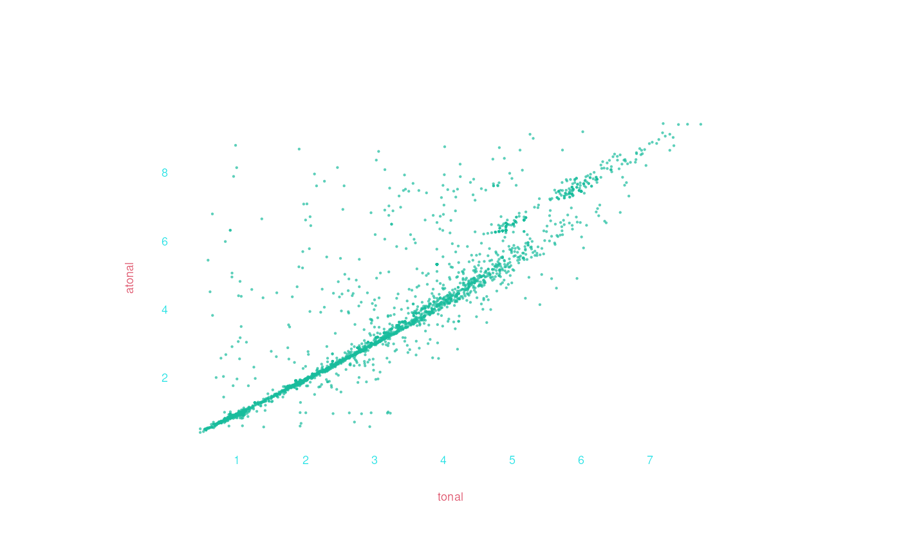

Using ppidyom with humdrumR
HumdrumRCalls.RmdThough it can be used on any R data vectors, ppidyom is
fully incorporated into humdrumR, making it
very easy to apply to existing musical datasets using various
operational definitions (“viewpoints”).
First examples
Let’s start with trusty Bach chorales, the first ten of which are packaged with humdrumR. To load them, we just need this:
chorales <- readHumdrum(humdrumRroot, "HumdrumData/BachChorales/.*krn")
#> Finding and reading files...
#> REpath-pattern '/home/nat/R/x86_64-pc-linux-gnu-library/4.5/humdrumR/HumdrumData/BachChorales/.*krn' matches 10 text files in 1 directory.
#> Ten files read from disk.
#> Validating ten files...all valid.
#> Parsing ten files...Assembling corpus...Done!If you have any other humdrum data on your machine, you can just pass
readHumdrum() the path and pattern to match your files.
Before applying ppidyom, consider what dimension of the music you
want to model, and your operational definition for that
dimension. This choral data is encoded as **kern, which
means it has relative rhythm data and absolute pitch encoded for each
note, as well as notation details like stem direction. Here we’ll
consider just focus on modeling pitch, ignoring rhythm. But “pitch” can
be viewed different ways: absolute vs relative, tonal vs atonal,
etc.
Let’s start with simple (no octave information) scale degree, which
we can extract using solfa(simple = TRUE). We can then pass
that straight to ppidyom():
chorales |> solfa(simple = TRUE) |> ppidyom()
#> ppidyom: 10 long-term group(s), N=5, model=stm, ppm=interpolation, alphabet=15
#> i is 1 in lt_groups
#> [1] "do" "do" "la" "ti" "do" "so" "la" "fa" "mi" "re" "do" "so" "do" "ti" "do"
#> [16] "re" "mi" "fa" "so" "do" "do" "do" "re" "mi" "mi" "re" "do" "so" "la" "la"
#> [31] "so" "fa" "mi" "fa" "so" "do" "re" "mi" "do" "fa" "do" "ti" "do" "re" "mi"
#> [46] "do" "so" "la" "so" "fa" "mi" "re" "do" "so" "do" "do" "ti" "la" "la" "so"
#> [61] "fa" "so" "do"
#> [1] "mi" "mi" "fa" "mi" "re" "do" "ti" "do" "fa" "mi" "fa" "so" "so" "so" "re"
#> [16] "mi" "fa" "so" "la" "so" "fa" "mi" "so" "so" "fa" "mi" "re" "mi" "fa" "so"
#> [31] "so" "so" "mi" "do" "mi" "la" "so" "so" "so" "fa" "so" "so" "fa" "mi" "fa"
#> [46] "so" "so" "fa" "mi" "fa" "so" "so" "so" "so" "la" "la" "so" "fa" "mi"
#> [1] "so" "so" "la" "so" "so" "mi" "la" "so" "la" "ti" "do" "ti" "do" "so" "la"
#> [16] "ti" "do" "ti" "so" "do" "do" "ti" "la" "ti" "do" "do" "re" "do" "ti" "do"
#> [31] "ti" "la" "la" "ti" "do" "re" "re" "do" "ti" "do" "te" "la" "do" "re" "do"
#> [46] "ti" "do" "ti" "ti" "la" "la" "ti" "do" "ti" "do" "re" "do" "ti" "do" "ti"
#> [61] "so"
#> [1] "do" "do" "so" "mi" "re" "do" "do" "re" "mi" "re" "mi" "so" "fa" "mi" "re"
#> [16] "do" "mi" "mi" "fa" "so" "so" "fa" "mi" "re" "do" "mi" "fa" "so" "fa" "mi"
#> [31] "do" "mi" "so" "fa" "mi" "re" "do" "re" "mi" "re" "mi" "so" "fa" "mi" "re"
#> [46] "do"
#> [1/10] 0.3s elapsed, 2.6s remaining
#> i is 2 in lt_groups
#> [1] "do" "ti" "la" "mi" "fa" "fi" "so" "re" "so" "so" "do" "re" "mi" "re" "do"
#> [16] "re" "re" "so" "mi" "la" "ti" "do" "so" "mi" "do" "fa" "mi" "fa" "so" "mi"
#> [31] "re" "mi" "fa" "te" "la" "re" "mi" "la" "so" "fa" "mi" "re" "do" "re" "mi"
#> [46] "fa" "so" "re" "la" "ti" "do" "ti" "so" "do" "do" "ti" "la" "so" "fa" "so"
#> [61] "do"
#> [1] "mi" "mi" "mi" "re" "do" "ti" "la" "re" "do" "ti" "so" "so" "fi" "mi" "re"
#> [16] "do" "ti" "ti" "do" "re" "mi" "fa" "so" "so" "fa" "so" "so" "so" "la" "re"
#> [31] "di" "re" "mi" "fa" "ti" "do" "ti" "la" "so" "so" "fa" "mi" "fa" "so" "la"
#> [46] "ti" "la" "la" "so" "fa" "mi" "re" "mi" "fa" "so" "fa" "mi" "la" "re" "so"
#> [61] "fa" "mi"
#> [1] "so" "la" "so" "la" "la" "so" "fi" "re" "ti" "do" "ti" "la" "so" "so" "fi"
#> [16] "re" "mi" "re" "do" "do" "ti" "do" "te" "la" "ti" "do" "ti" "di" "re" "do"
#> [31] "te" "la" "so" "la" "la" "so" "fa" "mi" "fa" "so" "la" "ti" "do" "so" "re"
#> [46] "do" "ti" "la" "so" "la" "ti" "do" "do" "ti" "so"
#> [1] "do" "do" "do" "do" "re" "te" "la" "so" "re" "mi" "re" "do" "ti" "la" "ti"
#> [16] "la" "so" "so" "fa" "mi" "re" "do" "do" "re" "mi" "re" "mi" "fa" "mi" "re"
#> [31] "di" "re" "so" "do" "re" "mi" "fa" "so" "fa" "mi" "re" "fa" "mi" "re" "so"
#> [46] "fa" "mi" "re" "do" "re" "mi" "re" "do"
#> [2/10] 0.6s elapsed, 2.3s remaining
#> i is 3 in lt_groups
#> [1] "so" "do" "re" "me" "re" "do" "ti" "do" "so" "re" "me" "fa" "so" "le" "so"
#> [16] "fa" "so" "do" "la" "te" "la" "so" "re" "do" "te" "la" "so" "fa" "me" "re"
#> [31] "so" "le" "me" "fa" "so" "do" "re" "me" "fa" "so" "do" "do" "ti" "do" "te"
#> [46] "le" "so" "fa" "mi" "fa" "fi" "so"
#> [1] "so" "so" "fa" "so" "fa" "me" "re" "me" "fa" "so" "le" "so" "so" "fa" "me"
#> [16] "fa" "ti" "do" "ti" "me" "do" "te" "do" "re" "re" "re" "do" "re" "me" "la"
#> [31] "so" "fa" "me" "fa" "so" "so" "so" "fa" "me" "re" "me" "me" "re" "do" "do"
#> [46] "ra" "do" "so" "la" "ti"
#> [1] "ti" "do" "ti" "do" "ti" "do" "re" "so" "la" "ti" "ti" "do" "ti" "do" "te"
#> [16] "le" "so" "so" "fa" "fa" "fi" "so" "fi" "so" "fi" "so" "te" "la" "so" "fi"
#> [31] "re" "do" "do" "ti" "do" "so" "so" "so" "so" "so" "so" "le" "te" "la" "ti"
#> [46] "do" "so"
#> [1] "re" "me" "re" "do" "so" "so" "fa" "me" "re" "fa" "me" "re" "do" "re" "me"
#> [16] "fa" "me" "re" "do" "do" "re" "do" "te" "la" "so" "la" "te" "do" "re" "te"
#> [31] "do" "re" "me" "re" "me" "re" "do" "ti" "do" "do" "so" "me" "fa" "so" "fa"
#> [46] "me" "re"
#> [3/10] 0.8s elapsed, 1.9s remaining
#> i is 4 in lt_groups
#> [1] "do" "ti" "so" "do" "re" "mi" "fa" "do" "fa" "ti" "do" "re" "mi" "la" "re"
#> [16] "do" "ti" "la" "so" "re" "so" "do" "la" "ti" "do" "re" "so" "mi" "do" "re"
#> [31] "so" "do" "mi" "do" "fa" "so" "la" "di" "re" "la" "do" "so" "la" "ti" "do"
#> [46] "so" "fi" "so" "do"
#> [1] "do" "re" "do" "ti" "do" "fa" "so" "la" "te" "do" "te" "la" "so" "so" "fa"
#> [16] "mi" "re" "re" "so" "fi" "re" "mi" "la" "re" "re" "re" "so" "fi" "ti" "do"
#> [31] "so" "do" "do" "la" "te" "la" "la" "so" "so" "do" "do" "ti" "so" "re" "mi"
#> [1] "mi" "re" "mi" "fa" "mi" "re" "do" "fa" "mi" "do" "re" "do" "do" "ti" "do"
#> [16] "la" "re" "do" "ti" "do" "ti" "do" "re" "mi" "fi" "so" "fi" "so" "so" "re"
#> [31] "re" "mi" "do" "re" "mi" "fa" "do" "re" "mi" "re" "di" "do" "ti" "la" "so"
#> [46] "so" "la" "so" "so"
#> [1] "so" "so" "so" "so" "te" "la" "so" "fa" "so" "mi" "do" "re" "mi" "fi" "so"
#> [16] "la" "so" "so" "do" "ti" "la" "ti" "do" "ti" "la" "so" "so" "do" "so" "la"
#> [31] "mi" "fa" "so" "fa" "mi" "mi" "re" "fa" "mi" "re" "la" "ti" "do"
#> [4/10] 1.0s elapsed, 1.5s remaining
#> i is 5 in lt_groups
#> [1] "do" "fa" "so" "la" "ti" "do" "re" "so" "do" "ti" "do" "ti" "la" "mi" "fa"
#> [16] "so" "do" "do" "ti" "la" "so" "la" "ti" "do" "so" "do" "fa" "do" "te" "la"
#> [31] "so" "fa" "mi" "fa" "so" "la" "re" "so" "do" "re" "mi" "fa" "ti" "di" "re"
#> [46] "re" "la" "di" "re" "mi" "fa" "re" "te" "la" "so" "la" "la" "re" "re" "mi"
#> [61] "fi" "so" "fi" "so" "re" "so" "mi" "la" "so" "do" "ti" "la" "mi" "re" "do"
#> [76] "fa" "mi" "re" "so" "fa" "so" "do"
#> [1] "mi" "fa" "mi" "re" "la" "re" "mi" "fa" "la" "so" "so" "so" "so" "do" "re"
#> [16] "mi" "do" "la" "re" "mi" "fa" "mi" "mi" "re" "so" "do" "re" "re" "do" "do"
#> [31] "ti" "do" "do" "do" "do" "do" "do" "do" "re" "mi" "re" "re" "do" "do" "so"
#> [46] "fa" "mi" "re" "la" "la" "la" "la" "so" "fa" "mi" "re" "re" "di" "re" "mi"
#> [61] "di" "re" "di" "re" "la" "ti" "do" "so" "fa" "me" "re" "re" "do" "ti" "ti"
#> [76] "do" "so" "so" "la" "so" "la" "so" "fa" "so" "la" "so" "fa" "mi"
#> [1] "do" "do" "ti" "do" "ti" "la" "do" "do" "ti" "do" "re" "do" "do" "do" "do"
#> [16] "do" "ti" "so" "so" "so" "la" "ti" "la" "la" "so" "so" "fa" "mi" "la" "so"
#> [31] "la" "te" "la" "ti" "do" "ti" "do" "re" "ti" "so" "do" "do" "re" "mi" "mi"
#> [46] "di" "re" "di" "mi" "re" "la" "fa" "so" "la" "te" "la" "so" "fa" "re" "so"
#> [61] "la" "te" "la" "so" "la" "la" "so" "so" "fi" "so" "so" "fa" "mi" "re" "do"
#> [76] "ti" "do" "do" "ti" "do" "do" "do" "do" "ti" "so"
#> [1] "so" "la" "so" "fa" "mi" "fa" "so" "fa" "mi" "fa" "mi" "re" "mi" "fa" "so"
#> [16] "fa" "mi" "re" "do" "re" "do" "do" "re" "mi" "fa" "mi" "re" "mi" "re" "do"
#> [31] "do" "re" "mi" "fa" "so" "la" "mi" "fi" "so" "mi" "fa" "so" "la" "so" "fa"
#> [46] "mi" "fa" "mi" "la" "la" "la" "re" "so" "fa" "mi" "re" "fa" "mi" "re" "do"
#> [61] "re" "do" "te" "la" "so" "so" "do" "re" "mi" "fa" "so" "fa" "mi" "re" "mi"
#> [76] "fa" "re" "do"
#> [5/10] 1.4s elapsed, 1.4s remaining
#> i is 6 in lt_groups
#> [1] "do" "do" "ti" "te" "la" "so" "la" "ti" "so" "do" "fa" "mi" "re" "do" "mi"
#> [16] "so" "do" "mi" "fi" "so" "la" "do" "mi" "re" "do" "la" "re" "so" "do" "re"
#> [31] "mi" "fa" "so" "do"
#> [1] "mi" "so" "so" "so" "la" "re" "so" "so" "fa" "so" "la" "fa" "so" "so" "so"
#> [16] "do" "do" "ti" "ti" "la" "so" "so" "fi" "ti" "so" "fa" "so" "la" "so" "fa"
#> [31] "mi"
#> [1] "so" "do" "re" "do" "do" "ti" "do" "re" "ti" "do" "do" "do" "ti" "do" "ti"
#> [16] "do" "mi" "mi" "re" "re" "so" "fa" "mi" "mi" "mi" "re" "re" "do" "do" "ti"
#> [31] "do" "do" "ti" "so"
#> [1] "do" "mi" "re" "mi" "fa" "so" "mi" "la" "so" "fa" "mi" "re" "mi" "so" "la"
#> [16] "ti" "do" "ti" "la" "so" "mi" "fa" "mi" "re" "re" "do"
#> [6/10] 1.6s elapsed, 1.0s remaining
#> i is 7 in lt_groups
#> [1] "do" "la" "mi" "fa" "fa" "mi" "fa" "so" "do" "do" "si" "mi" "la" "so" "fa"
#> [16] "mi" "fa" "so" "do" "do" "fa" "do" "ti" "la" "si" "la" "re" "mi" "la" "fi"
#> [31] "so" "fa" "mi" "do" "re" "so" "mi" "la" "so" "la" "ti" "la" "so" "do" "do"
#> [46] "fa" "mi" "re" "re" "do" "te" "la" "so" "la" "te" "la" "re" "so" "do" "ti"
#> [61] "la" "re" "do" "te" "mi" "fa" "do" "fi" "so" "do" "re" "so" "mi" "la" "so"
#> [76] "re" "mi" "fa" "fi" "so" "si" "la" "ti" "do" "so" "la" "fa" "so" "so" "do"
#> [1] "mi" "mi" "mi" "do" "ti" "do" "ti" "do" "mi" "mi" "re" "do" "so" "so" "la"
#> [16] "so" "mi" "mi" "fa" "so" "si" "la" "ti" "mi" "fa" "mi" "do" "do" "ti" "do"
#> [31] "re" "mi" "re" "do" "ti" "ti" "do" "fa" "re" "so" "so" "fa" "so" "la" "re"
#> [46] "so" "fa" "mi" "re" "di" "re" "ti" "do" "do" "re" "re" "re" "do" "te" "la"
#> [61] "do" "la" "re" "mi" "re" "do" "ti" "ti" "do" "re" "re" "do" "ti" "fa" "do"
#> [76] "ti" "mi" "la" "so" "so" "so" "fa" "mi" "la" "so" "fa" "mi"
#> [1] "so" "la" "so" "fa" "mi" "re" "so" "la" "so" "so" "so" "la" "ti" "si" "la"
#> [16] "ti" "do" "ti" "so" "so" "la" "ti" "do" "re" "do" "ti" "la" "si" "mi" "la"
#> [31] "so" "so" "so" "fi" "re" "mi" "mi" "la" "so" "la" "ti" "do" "te" "la" "do"
#> [46] "re" "re" "do" "te" "do" "re" "so" "fi" "so" "so" "la" "la" "te" "te" "la"
#> [61] "so" "fa" "so" "la" "so" "so" "fi" "re" "mi" "mi" "fi" "so" "fi" "so" "la"
#> [76] "ti" "do" "so" "ti" "do" "re" "do" "ti" "do" "do" "ti" "so"
#> [1] "do" "do" "ti" "la" "so" "do" "re" "mi" "mi" "mi" "re" "mi" "mi" "re" "do"
#> [16] "re" "do" "do" "do" "re" "mi" "re" "mi" "do" "ti" "la" "re" "re" "do" "ti"
#> [31] "do" "la" "so" "so" "do" "do" "re" "re" "mi" "re" "mi" "do" "do" "fa" "fa"
#> [46] "mi" "re" "mi" "re" "re" "mi" "mi" "fa" "fa" "so" "do" "mi" "re" "do" "ti"
#> [61] "do" "la" "so" "so" "do" "ti" "la" "so" "re" "mi" "re" "mi" "fa" "mi" "re"
#> [76] "do" "ti" "do" "re" "mi" "re" "do"
#> [7/10] 2.1s elapsed, 0.9s remaining
#> i is 8 in lt_groups
#> [1] "do" "te" "le" "so" "fa" "so" "do" "do" "do" "te" "le" "so" "fa" "me" "le"
#> [16] "te" "me" "le" "so" "fa" "so" "le" "fa" "so" "do" "do" "re" "mi" "do" "fa"
#> [31] "so" "le" "fa" "te" "do" "re" "te" "me" "me" "le" "te" "do" "le" "fa" "so"
#> [46] "le" "fa" "te" "so" "do" "fa" "fa" "me" "re" "do" "fa" "so" "do" "do" "re"
#> [61] "me" "fa" "so" "la" "te" "do" "re" "re" "so" "so" "do" "te" "le" "so" "fa"
#> [76] "so" "le" "te" "te" "me" "me" "le" "te" "le" "so" "fa" "so" "le" "fa" "te"
#> [91] "do" "te" "le" "so" "le" "te" "so" "do" "ti" "do" "re" "me" "re" "me" "fa"
#> [106] "so" "so" "do" "do"
#> [1] "me" "mi" "fa" "so" "le" "so" "fa" "me" "me" "so" "fa" "te" "te" "do" "te"
#> [16] "le" "so" "le" "le" "re" "do" "me" "le" "so" "fa" "me" "mi" "fa" "so" "mi"
#> [31] "fa" "fa" "fa" "te" "te" "te" "le" "le" "do" "do" "ra" "do" "te" "le" "so"
#> [46] "so" "fa" "so" "le" "so" "fa" "me" "so" "so" "so" "so" "so" "fi" "so" "re"
#> [61] "mi" "mi" "fa" "te" "te" "le" "so" "so" "le" "le" "do" "do" "te" "te" "re"
#> [76] "re" "do" "do" "so" "do" "so" "so" "so" "so"
#> [1] "do" "do" "do" "ti" "do" "do" "re" "ti" "do" "so" "do" "re" "me" "me" "me"
#> [16] "do" "re" "te" "do" "re" "ti" "do" "do" "ti" "so" "do" "do" "do" "do" "re"
#> [31] "me" "fa" "re" "me" "me" "do" "do" "fa" "fa" "fa" "mi" "do" "ti" "do" "do"
#> [46] "ti" "do" "do" "ti" "so" "me" "me" "re" "re" "re" "me" "re" "do" "ti" "ti"
#> [61] "do" "do" "do" "re" "me" "me" "do" "re" "te" "te" "do" "do" "fa" "fa" "re"
#> [76] "re" "so" "so" "me" "re" "me" "fa" "so" "fa" "me" "re" "re" "mi" "mi"
#> [1] "so" "so" "fa" "me" "re" "do" "do" "do" "me" "fa" "so" "so" "fa" "me" "me"
#> [16] "me" "fa" "fa" "me" "re" "do" "do" "so" "so" "le" "le" "fa" "fa" "so" "so"
#> [31] "me" "me" "le" "le" "so" "so" "fa" "re" "me" "fa" "me" "re" "re" "do" "do"
#> [46] "do" "te" "te" "la" "la" "so" "so" "so" "so" "le" "so" "fa" "me" "me" "me"
#> [61] "me" "me" "le" "le" "fa" "fa" "te" "te" "so" "so" "do" "do" "ti" "ti" "do"
#> [76] "do"
#> [8/10] 2.4s elapsed, 0.6s remaining
#> i is 9 in lt_groups
#> [1] "do" "ti" "la" "so" "do" "ti" "do" "re" "re" "so" "si" "la" "ti" "do" "fa"
#> [16] "fa" "mi" "re" "do" "so" "so" "do" "so" "so" "fa" "mi" "re" "si" "la" "la"
#> [31] "re" "la" "ti" "do" "di" "re" "ri" "mi" "mi" "la" "so" "fa" "mi" "re" "do"
#> [46] "ti" "la" "ti" "do" "la" "fi" "mi" "fi" "re" "so" "mi" "fa" "so" "la" "ti"
#> [61] "do" "fa" "so" "do"
#> [1] "mi" "mi" "fa" "fa" "so" "mi" "re" "re" "re" "re" "re" "mi" "re" "do" "re"
#> [16] "mi" "fa" "so" "so" "so" "fa" "mi" "so" "la" "ti" "la" "so" "la" "ti" "mi"
#> [31] "la" "so" "fa" "do" "re" "mi" "fa" "so" "la" "fa" "fi" "mi" "mi" "mi" "so"
#> [46] "so" "do" "do" "re" "mi" "la" "so" "la" "fi" "so" "so" "so" "fa" "fa" "mi"
#> [61] "mi" "re" "do" "do" "ti" "la" "ti" "fa" "mi"
#> [1] "so" "la" "ti" "so" "la" "ti" "la" "ti" "do" "ti" "ti" "la" "so" "la" "ti"
#> [16] "do" "do" "ti" "so" "ti" "do" "re" "di" "re" "di" "re" "re" "di" "la" "la"
#> [31] "si" "la" "la" "la" "ti" "do" "ti" "ti" "do" "re" "do" "re" "do" "re" "mi"
#> [46] "mi" "re" "re" "do" "do" "ti" "do" "ti" "la" "ti" "do" "re" "so" "la" "so"
#> [61] "so"
#> [1] "do" "do" "re" "mi" "fi" "so" "so" "fi" "so" "mi" "fa" "mi" "re" "mi" "re"
#> [16] "do" "re" "re" "mi" "fa" "fa" "mi" "re" "mi" "re" "mi" "mi" "mi" "fa" "so"
#> [31] "la" "la" "si" "la" "ti" "do" "mi" "fa" "mi" "re" "re" "so" "la" "so" "fa"
#> [46] "mi" "fa" "re" "do"
#> [9/10] 2.7s elapsed, 0.3s remaining
#> i is 10 in lt_groups
#> [1] "fa" "me" "re" "do" "re" "me" "re" "do" "so" "so" "do" "te" "le" "so" "le"
#> [16] "me" "fa" "so" "me" "re" "do" "te" "le" "so" "fa" "so" "do" "do" "so" "fa"
#> [31] "me" "re" "me" "fa" "fa" "te" "me" "do" "so" "le" "me" "ra" "do" "ti" "do"
#> [46] "so"
#> [1] "ti" "do" "fa" "so" "fa" "so" "fa" "me" "re" "so" "so" "le" "te" "me" "me"
#> [16] "re" "do" "ti" "do" "re" "me" "fa" "fa" "so" "le" "re" "me" "so" "so" "so"
#> [31] "fa" "me" "la" "te" "la" "te" "te" "do" "ti" "do" "te" "te" "do" "re" "do"
#> [46] "ti"
#> [1] "so" "so" "ti" "do" "te" "la" "so" "la" "ti" "ti" "do" "re" "me" "le" "so"
#> [16] "fa" "me" "re" "so" "fa" "so" "la" "te" "do" "re" "do" "ti" "so" "do" "te"
#> [31] "te" "te" "le" "so" "fa" "me" "re" "so" "so" "so" "fa" "me" "me" "fa" "fa"
#> [46] "me" "re"
#> [1] "re" "so" "re" "me" "re" "do" "te" "do" "re" "re" "me" "fa" "me" "re" "do"
#> [16] "te" "le" "so" "do" "te" "me" "re" "do" "fa" "me" "re" "do" "me" "re" "me"
#> [31] "fa" "te" "re" "do" "te" "te" "me" "re" "do" "so" "te" "le" "so"
#> [10/10] 2.9s elapsed, 0.0s remaining
#> ####################### vvv chor001.krn vvv ########################
#> 1: !!!COM: Bach, Johann Sebastian
#> 2: !!!CDT: 1685/02/21/-1750/07/28/
#> 3: !!!OTL@@DE: Aus meines Herzens Grunde
#> 4: !!!OTL@EN: From the Depths of My Heart
#> 5: !!!SCT: BWV 269
#> 6: !!!PC#: 1
#> 7: !!!AGN: chorale
#> 8: **kern **kern **kern ***
#> 9: *ICvox *ICvox *ICvox ***
#> 10: *Ibass *Itenor *Ialto ***
#> 11: *I"Bass *I"Tenor *I"Alto ***
#> 12: *>[A,A,B] *>[A,A,B] *>[A,A,B] ***
#> 13: *>norep[A,B] *>norep[A,B] *>norep[A,B] ***
#> 14: *>A *>A *>A ***
#> 15: *clefF4 *clefGv2 *clefG2 ***
#> 16: *k[f#] *k[f#] *k[f#] ***
#> 17: *G: *G: *G: ***
#> 18: *M3/4 *M3/4 *M3/4 ***
#> 19: *MM100 *MM100 *MM100 ***
#> 20: 3.90689059560852 3.90689059560852 3.90689059560852 ***
#> 21: =1 =1 =1 ***
#> 22: 0.906890595608519 0.906890595608519 0.906890595608519 ***
#> 23: 4.90689059560852 4.90689059560852 4.90689059560852 ***
#> 24: . 1.26303440583379 . ***
#> 25: 5.16992500144231 4.85798099512757 1.26303440583379 ***
#> 26: =2 =2 =2 ***
#> 27: 1.74193184705956 5.1963972128035 1.85798099512757 ***
#> 28: 5.75488750216347 5.04439411935845 . ***
#> 29: . . . ***
#> 30: 3.04439411935845 3.24792751344359 6 ***
#> 31: =3 =3 =3 ***
#> 32: 6.04439411935845 4.2045711442492 2.78135971352466 ***
#> 33: . 0.891688188964848 0.74416109557041 ***
#> 34: 5.02680005934372 2.8588638274086 3.33985000288462 ***
#> 35: 4.90689059560852 . 6.06608919045777 ***
#> 36: 2.51986747249927 5.88264304936184 5.16992500144231 ***
#> 37: =4 =4 =4 ***
#> 38: 2.62846413935774 3.56985560833095 3.34872815423108 ***
#> 39: 3.01667874114663 0.991779493195032 0.995456074855052 ***
#> 40: =5 =5 =5 ***
#> 41-133::::::::::::::::::::::::::::::::::::::::::::::::::::::::::::::
#> ####################### ^^^ chor001.krn ^^^ ########################
#>
#> (eight more pieces...)
#>
#> ####################### vvv chor010.krn vvv ########################
#> 1-60::::::::::::::::::::::::::::::::::::::::::::::::::::::::::::::
#> 61: 3.59332597365578 2.25238716163429 3.45298812851182 ***
#> 62: 4.9126498648972 4.51832530769087 4.06608919045777 ***
#> 63: =9 =9 =9 ***
#> 64: 2.52910926598764 2.42530583473267 2.72368473754498 ***
#> 65: 3.4391116342577 2.57619229109342 5.12029423371771 ***
#> 66: 2.61945087710645 . . ***
#> 67: 0.663221514641656 3.13750352374994 2.46039566480808 ***
#> 68: . . 5.75321674917896 ***
#> 69: 2.45278206404265 1.98351187721143 1.01375315506733 ***
#> 70: =10 =10 =10 ***
#> 71: 2.86705033107673 6.28540221886225 1.24065951297955 ***
#> 72: . 4.17492568250068 . ***
#> 73: 4.76428620016572 . 0.99007212507039 ***
#> 74: . 4.94251450533924 . ***
#> 75: 4.99435343685886 1.11547721741994 0.908319309778648 ***
#> 76: =11 =11 =11 ***
#> 77: 3.61812936465636 5.07542101497908 0.987288948250446 ***
#> 78: 4.59289668226337 4.39827898101748 3.1768444153821 ***
#> 79: 2.16214765085059 2.57631495210764 2.93326601103282 ***
#> 80: . . 3.59578547001569 ***
#> 81: =12 =12 =12 ***
#> 82: 3.811030580201 1.09080009705465 2.12629806904205 ***
#> 83: 0.867436787378637 5.45724405939953 5.26434060333442 ***
#> 84: 7.28540221886225 2.65037790917012 5.07948478382681 ***
#> 85: 2.96347412397489 1.1110142845159 . ***
#> 86: =13 =13 =13 ***
#> 87: 6.22881869049588 3.52199854305685 4.53713397563054 ***
#> 88: 2.84890741150211 3.26473469482363 2.53915881110803 ***
#> 89: 2.15912979844282 1.06058798759344 1.91537706149635 ***
#> 90: == == == ***
#> 91: *- *- *- ***
#> 92: !!!hum2abc: -Q ''
#> 93: !!!title: @{PC#}. @{OTL@@DE}
#> 94: !!!YOR1: 371 vierstimmige Choralgesänge von Johann Sebas***
#> 95: !!!YOR2: 4th ed. by Alfred Dörffel (Leipzig: Breitkopf u***
#> 96: !!!YOR2: c.1875). 178 pp. Plate "V.A.10". reprint: J.S. Bach***
#> 97: !!!YOR4: Chorales (New York: Associated Music Publishers, Inc***
#> 98: !!!SMS: B&H, 4th ed, Alfred Dörffel, c.1875, plate V.A.10
#> 99: !!!EED: Craig Stuart Sapp
#> 100: !!!EEV: 2009/05/22
#> ####################### ^^^ chor010.krn ^^^ ########################
#> (***one spine/path not displayed due to screen size***)
#>
#> humdrumR corpus of ten pieces.
#>
#> Data fields:
#> *ICppidyom :: numeric
#> Solfa :: character (**solfa tokens)
#> Token :: characterAnd that’s all it takes! We see a unique information theory prediction for each and every note in the score.
The ppidyom() function has many arguments, but here we’re just using the default settings. What exactly did ppidyom do here, by default?:
-
Leave-one-out cross validation:
- For each chorale, the model is trained on the other nine chorales to create the “long-term” model.
- All four voices (bass, tenor, alto, soprano) within each chorale are used, each treated like a separate sequence.
- The maximum N-gram length of five is used.
Different operational definitions
Perhaps you decide that, given your research questions, it
makes more sense to incorporate absolute pitch information. Just get rid
of simple = TRUE (or set simple = FALSE).
chorales |> solfa(simple = FALSE) |> ppidyom()
#> ppidyom: 10 long-term group(s), N=5, model=stm, ppm=interpolation, alphabet=52
#> i is 1 in lt_groups
#> [1] "vvdo" "vdo" "vla" "vti" "vdo" "vso" "vla" "vfa" "vvmi" "vvre"
#> [11] "vvdo" "vso" "vvdo" "vvti" "vvdo" "vvre" "vvmi" "vfa" "vso" "vvdo"
#> [21] "vvdo" "vvdo" "vvre" "vvmi" "vvmi" "vvre" "vvdo" "vso" "vla" "vla"
#> [31] "vso" "vfa" "vvmi" "vfa" "vso" "vvdo" "vvre" "vvmi" "vvdo" "vfa"
#> [41] "vvdo" "vvti" "vvdo" "vvre" "vvmi" "vvdo" "vso" "vla" "vso" "vfa"
#> [51] "vvmi" "vvre" "vvdo" "vso" "vdo" "vdo" "vti" "vla" "vla" "vso"
#> [61] "vfa" "vso" "vvdo"
#> [1] "vmi" "vmi" "fa" "vmi" "vre" "vdo" "vti" "vdo" "fa" "vmi" "fa" "so"
#> [13] "so" "so" "vre" "vmi" "fa" "so" "la" "so" "fa" "vmi" "so" "so"
#> [25] "fa" "vmi" "vre" "vmi" "fa" "so" "so" "so" "vmi" "vdo" "vmi" "la"
#> [37] "so" "so" "so" "fa" "so" "so" "fa" "vmi" "fa" "so" "so" "fa"
#> [49] "vmi" "fa" "so" "so" "so" "so" "la" "la" "so" "fa" "vmi"
#> [1] "so" "so" "la" "so" "so" "vmi" "la" "so" "la" "ti" "do" "ti"
#> [13] "do" "so" "la" "ti" "do" "ti" "so" "do" "do" "ti" "la" "ti"
#> [25] "do" "do" "re" "do" "ti" "do" "ti" "la" "la" "ti" "do" "re"
#> [37] "re" "do" "ti" "do" "te" "la" "do" "re" "do" "ti" "do" "ti"
#> [49] "ti" "la" "la" "ti" "do" "ti" "do" "re" "do" "ti" "do" "ti"
#> [61] "so"
#> [1] "do" "do" "^so" "mi" "re" "do" "do" "re" "mi" "re" "mi" "^so"
#> [13] "^fa" "mi" "re" "do" "mi" "mi" "^fa" "^so" "^so" "^fa" "mi" "re"
#> [25] "do" "mi" "^fa" "^so" "^fa" "mi" "do" "mi" "^so" "^fa" "mi" "re"
#> [37] "do" "re" "mi" "re" "mi" "^so" "^fa" "mi" "re" "do"
#> [1/10] 0.5s elapsed, 4.5s remaining
#> i is 2 in lt_groups
#> [1] "vdo" "vti" "vla" "vmi" "vfa" "vfi" "vso" "vvre" "vvso" "vso"
#> [11] "vdo" "vre" "mi" "vre" "vdo" "vre" "vvre" "vso" "vmi" "vla"
#> [21] "vti" "vdo" "vso" "vmi" "vvdo" "vfa" "vmi" "vfa" "vso" "vmi"
#> [31] "vvre" "vmi" "vfa" "vte" "vla" "vvre" "vmi" "vla" "vso" "vfa"
#> [41] "vmi" "vvre" "vvdo" "vvre" "vmi" "vfa" "vso" "vvre" "vla" "vti"
#> [51] "vdo" "vti" "vso" "vdo" "vdo" "vti" "vla" "vso" "vfa" "vso"
#> [61] "vvdo"
#> [1] "mi" "mi" "mi" "vre" "vdo" "vti" "vla" "vre" "vdo" "vti" "so" "so"
#> [13] "fi" "mi" "vre" "vdo" "vti" "vti" "vdo" "vre" "mi" "fa" "so" "so"
#> [25] "fa" "so" "so" "so" "la" "vre" "vdi" "vre" "mi" "fa" "vti" "vdo"
#> [37] "vti" "vla" "vso" "so" "fa" "mi" "fa" "so" "la" "ti" "la" "la"
#> [49] "so" "fa" "mi" "vre" "mi" "fa" "so" "fa" "mi" "la" "vre" "so"
#> [61] "fa" "mi"
#> [1] "so" "la" "so" "la" "la" "so" "fi" "vre" "ti" "do" "ti" "la"
#> [13] "so" "so" "fi" "vre" "^mi" "re" "do" "do" "ti" "do" "te" "la"
#> [25] "ti" "do" "ti" "di" "re" "do" "te" "la" "so" "la" "la" "so"
#> [37] "fa" "mi" "fa" "so" "la" "ti" "do" "so" "re" "do" "ti" "la"
#> [49] "so" "la" "ti" "do" "do" "ti" "so"
#> [1] "do" "do" "do" "do" "re" "te" "la" "so" "re" "^mi" "re" "do"
#> [13] "ti" "la" "ti" "la" "so" "^so" "^fa" "^mi" "re" "do" "do" "re"
#> [25] "^mi" "re" "^mi" "^fa" "^mi" "re" "di" "re" "so" "do" "re" "^mi"
#> [37] "^fa" "^so" "^fa" "^mi" "re" "^fa" "^mi" "re" "^so" "^fa" "^mi" "re"
#> [49] "do" "re" "^mi" "re" "do"
#> [2/10] 0.8s elapsed, 3.1s remaining
#> i is 3 in lt_groups
#> [1] "vso" "vdo" "vre" "me" "vre" "vdo" "vti" "vdo" "vso" "vvre"
#> [11] "vme" "vfa" "vso" "vle" "vso" "vfa" "vso" "vvdo" "vla" "vte"
#> [21] "vla" "vso" "vre" "vdo" "vte" "vla" "vso" "vfa" "vme" "vvre"
#> [31] "vso" "vle" "vme" "vfa" "vso" "vvdo" "vvre" "vme" "vfa" "vso"
#> [41] "vvdo" "vdo" "vti" "vdo" "vte" "vle" "vso" "vfa" "vmi" "vfa"
#> [51] "vfi" "vso"
#> [1] "so" "so" "fa" "so" "fa" "me" "vre" "me" "fa" "so" "le" "so"
#> [13] "so" "fa" "me" "fa" "vti" "vdo" "vti" "me" "vdo" "vte" "vdo" "vre"
#> [25] "vre" "vre" "vdo" "vre" "me" "vla" "so" "fa" "me" "fa" "so" "so"
#> [37] "so" "fa" "me" "vre" "me" "me" "vre" "vdo" "vdo" "vra" "vdo" "vso"
#> [49] "vla" "vti"
#> [1] "ti" "do" "ti" "do" "ti" "do" "re" "so" "la" "ti" "ti" "do"
#> [13] "ti" "do" "te" "le" "so" "so" "fa" "fa" "fi" "so" "fi" "so"
#> [25] "fi" "so" "te" "la" "so" "fi" "vre" "vdo" "do" "ti" "do" "so"
#> [37] "so" "so" "so" "so" "so" "le" "te" "la" "ti" "do" "so"
#> [1] "re" "^me" "re" "do" "^so" "^so" "^fa" "^me" "re" "^fa" "^me" "re"
#> [13] "do" "re" "^me" "^fa" "^me" "re" "do" "do" "re" "do" "te" "la"
#> [25] "so" "la" "te" "do" "re" "te" "do" "re" "^me" "re" "^me" "re"
#> [37] "do" "ti" "do" "do" "^so" "^me" "^fa" "^so" "^fa" "^me" "re"
#> [3/10] 1.0s elapsed, 2.4s remaining
#> i is 4 in lt_groups
#> [1] "vdo" "vti" "vvso" "vdo" "vre" "vmi" "vfa" "vdo" "vvfa" "vti"
#> [11] "vdo" "vre" "vmi" "vla" "vre" "vdo" "vti" "vla" "vvso" "vre"
#> [21] "vvso" "vdo" "vla" "vti" "vdo" "vre" "vso" "vmi" "vdo" "vre"
#> [31] "vvso" "vdo" "vmi" "vdo" "vfa" "vso" "la" "vdi" "vre" "vla"
#> [41] "vdo" "vvso" "vla" "vti" "vdo" "vvso" "vvfi" "vvso" "vvdo"
#> [1] "do" "re" "do" "ti" "do" "vfa" "vso" "la" "te" "do" "te" "la"
#> [13] "vso" "vso" "vfa" "vmi" "vre" "vre" "vso" "vfi" "vre" "vmi" "la" "vre"
#> [25] "re" "re" "vso" "vfi" "ti" "do" "vso" "do" "do" "la" "te" "la"
#> [37] "la" "vso" "vso" "do" "do" "ti" "vso" "vre" "vmi"
#> [1] "mi" "re" "mi" "fa" "mi" "re" "do" "fa" "mi" "do" "re" "do"
#> [13] "do" "ti" "do" "la" "re" "do" "ti" "do" "ti" "do" "re" "mi"
#> [25] "fi" "so" "fi" "so" "so" "re" "re" "mi" "do" "re" "mi" "fa"
#> [37] "do" "re" "mi" "re" "di" "do" "ti" "la" "vso" "vso" "la" "vso"
#> [49] "vso"
#> [1] "so" "so" "so" "so" "^te" "^la" "so" "fa" "so" "mi" "do" "re"
#> [13] "mi" "fi" "so" "^la" "so" "so" "^do" "^ti" "^la" "^ti" "^do" "^ti"
#> [25] "^la" "so" "so" "^do" "so" "^la" "mi" "fa" "so" "fa" "mi" "mi"
#> [37] "re" "fa" "mi" "re" "la" "ti" "do"
#> [4/10] 1.2s elapsed, 1.9s remaining
#> i is 5 in lt_groups
#> [1] "vdo" "vfa" "vso" "vla" "vti" "vdo" "vre" "vso" "vdo" "vti"
#> [11] "vdo" "vti" "vla" "vvmi" "vfa" "vso" "vvdo" "vdo" "vti" "vla"
#> [21] "vso" "vla" "vti" "vdo" "vso" "vvdo" "vfa" "vdo" "vte" "vla"
#> [31] "vso" "vfa" "vvmi" "vfa" "vso" "vla" "vvre" "vso" "vdo" "vre"
#> [41] "vmi" "fa" "vti" "vdi" "vre" "vvre" "vla" "vvdi" "vvre" "vvmi"
#> [51] "vfa" "vvre" "vte" "vla" "vso" "vla" "vvla" "vvre" "vvre" "vvmi"
#> [61] "vfi" "vso" "vfi" "vso" "vvre" "vso" "vvmi" "vla" "vso" "vdo"
#> [71] "vti" "vla" "vvmi" "vvre" "vvdo" "vfa" "vvmi" "vvre" "vso" "vfa"
#> [81] "vso" "vvdo"
#> [1] "vmi" "fa" "vmi" "vre" "la" "vre" "vmi" "fa" "la" "so" "so" "so"
#> [13] "so" "vdo" "vre" "vmi" "vdo" "la" "vre" "vmi" "fa" "vmi" "vmi" "vre"
#> [25] "so" "vdo" "vre" "vre" "vdo" "vdo" "vti" "vdo" "vdo" "vdo" "vdo" "vdo"
#> [37] "vdo" "vdo" "vre" "vmi" "vre" "vre" "vdo" "vdo" "so" "fa" "vmi" "vre"
#> [49] "la" "la" "la" "la" "so" "fa" "vmi" "vre" "vre" "vdi" "vre" "vmi"
#> [61] "vdi" "vre" "vdi" "vre" "vla" "vti" "vdo" "so" "fa" "vme" "vre" "vre"
#> [73] "vdo" "vti" "vti" "vdo" "so" "so" "la" "so" "la" "so" "fa" "so"
#> [85] "la" "so" "fa" "vmi"
#> [1] "do" "do" "ti" "do" "ti" "la" "do" "do" "ti" "do" "re" "do"
#> [13] "do" "do" "do" "do" "ti" "so" "so" "so" "la" "ti" "la" "la"
#> [25] "so" "so" "fa" "vmi" "la" "so" "la" "te" "la" "ti" "do" "ti"
#> [37] "do" "re" "ti" "so" "do" "do" "re" "mi" "mi" "di" "re" "di"
#> [49] "mi" "re" "la" "fa" "so" "la" "te" "la" "so" "fa" "re" "so"
#> [61] "la" "te" "la" "so" "la" "la" "so" "so" "fi" "so" "so" "fa"
#> [73] "vmi" "vre" "vdo" "vti" "vdo" "do" "ti" "do" "do" "do" "do" "ti"
#> [85] "so"
#> [1] "^so" "^la" "^so" "^fa" "mi" "^fa" "^so" "^fa" "mi" "^fa" "mi" "re"
#> [13] "mi" "^fa" "^so" "^fa" "mi" "re" "do" "re" "do" "do" "re" "mi"
#> [25] "^fa" "mi" "re" "mi" "re" "do" "do" "re" "mi" "^fa" "^so" "^la"
#> [37] "mi" "^fi" "^so" "mi" "^fa" "^so" "^la" "^so" "^fa" "mi" "^fa" "mi"
#> [49] "^la" "^la" "^la" "re" "^so" "^fa" "mi" "re" "^fa" "mi" "re" "do"
#> [61] "re" "do" "te" "la" "so" "so" "do" "re" "mi" "^fa" "^so" "^fa"
#> [73] "mi" "re" "mi" "^fa" "re" "do"
#> [5/10] 1.6s elapsed, 1.6s remaining
#> i is 6 in lt_groups
#> [1] "vvdo" "vdo" "vti" "vte" "vla" "vso" "vla" "vti" "vso" "vdo"
#> [11] "vvfa" "vvmi" "vvre" "vvdo" "vvmi" "vso" "vvdo" "vmi" "vvfi" "vso"
#> [21] "vla" "vdo" "vmi" "vre" "vdo" "vla" "vre" "vso" "vvdo" "vvre"
#> [31] "vvmi" "vvfa" "vso" "vvdo"
#> [1] "vmi" "so" "so" "so" "la" "vre" "so" "so" "vfa" "so" "la" "vfa"
#> [13] "so" "so" "so" "do" "do" "ti" "ti" "la" "so" "so" "vfi" "ti"
#> [25] "so" "vfa" "so" "la" "so" "vfa" "vmi"
#> [1] "so" "do" "re" "do" "do" "ti" "do" "re" "ti" "do" "do" "do"
#> [13] "ti" "do" "ti" "do" "mi" "mi" "re" "re" "^so" "fa" "mi" "mi"
#> [25] "mi" "re" "re" "do" "do" "ti" "do" "do" "ti" "so"
#> [1] "do" "mi" "re" "mi" "fa" "^so" "mi" "^la" "^so" "fa" "mi" "re"
#> [13] "mi" "^so" "^la" "^ti" "^do" "^ti" "^la" "^so" "mi" "fa" "mi" "re"
#> [25] "re" "do"
#> [6/10] 1.8s elapsed, 1.2s remaining
#> i is 7 in lt_groups
#> [1] "vdo" "vla" "vmi" "vfa" "vfa" "vmi" "vfa" "vso" "vvdo" "vdo"
#> [11] "vsi" "vmi" "vla" "vso" "vfa" "vmi" "vfa" "vso" "vvdo" "vvdo"
#> [21] "vfa" "vdo" "vti" "vla" "vsi" "vla" "vvre" "vmi" "vvla" "vfi"
#> [31] "vso" "vfa" "vmi" "vvdo" "vvre" "vso" "vmi" "vla" "vso" "vla"
#> [41] "vti" "vla" "vso" "vdo" "vvdo" "vfa" "vmi" "vvre" "vre" "vdo"
#> [51] "vte" "vla" "vso" "vla" "vte" "vla" "vvre" "vso" "vdo" "vti"
#> [61] "vla" "vre" "vdo" "vte" "vmi" "vfa" "vdo" "vfi" "vso" "vvdo"
#> [71] "vvre" "vso" "vmi" "vla" "vso" "vvre" "vmi" "vfa" "vfi" "vso"
#> [81] "vsi" "vla" "vti" "vdo" "vso" "vla" "vfa" "vso" "vso" "vvdo"
#> [1] "mi" "mi" "mi" "vdo" "vti" "vdo" "vti" "vdo" "mi" "mi" "vre" "vdo"
#> [13] "so" "so" "la" "so" "mi" "mi" "fa" "so" "si" "la" "ti" "mi"
#> [25] "fa" "mi" "vdo" "vdo" "vti" "vdo" "vre" "mi" "vre" "vdo" "vti" "vti"
#> [37] "vdo" "fa" "vre" "so" "so" "fa" "so" "la" "vre" "so" "fa" "mi"
#> [49] "vre" "vdi" "vre" "vti" "vdo" "vdo" "vre" "vre" "vre" "vdo" "vte" "vla"
#> [61] "vdo" "vla" "vre" "mi" "vre" "vdo" "vti" "vti" "vdo" "vre" "vre" "vdo"
#> [73] "vti" "fa" "vdo" "vti" "mi" "la" "so" "so" "so" "fa" "mi" "la"
#> [85] "so" "fa" "mi"
#> [1] "so" "la" "so" "fa" "mi" "vre" "so" "la" "so" "so" "so" "la"
#> [13] "ti" "si" "la" "ti" "do" "ti" "so" "so" "la" "ti" "do" "re"
#> [25] "do" "ti" "la" "si" "mi" "la" "so" "so" "so" "fi" "vre" "mi"
#> [37] "mi" "la" "so" "la" "ti" "do" "te" "la" "do" "re" "re" "do"
#> [49] "te" "do" "re" "so" "fi" "so" "so" "la" "la" "te" "te" "la"
#> [61] "so" "fa" "so" "la" "so" "so" "fi" "vre" "mi" "mi" "fi" "so"
#> [73] "fi" "so" "la" "ti" "do" "so" "ti" "do" "re" "do" "ti" "do"
#> [85] "do" "ti" "so"
#> [1] "do" "do" "ti" "la" "so" "do" "re" "^mi" "^mi" "^mi" "re" "^mi"
#> [13] "^mi" "re" "do" "re" "do" "do" "do" "re" "^mi" "re" "^mi" "do"
#> [25] "ti" "la" "re" "re" "do" "ti" "do" "la" "so" "so" "do" "do"
#> [37] "re" "re" "^mi" "re" "^mi" "do" "do" "^fa" "^fa" "^mi" "re" "^mi"
#> [49] "re" "re" "^mi" "^mi" "^fa" "^fa" "^so" "do" "^mi" "re" "do" "ti"
#> [61] "do" "la" "so" "so" "do" "ti" "la" "so" "re" "^mi" "re" "^mi"
#> [73] "^fa" "^mi" "re" "do" "ti" "do" "re" "^mi" "re" "do"
#> [7/10] 2.2s elapsed, 0.9s remaining
#> i is 8 in lt_groups
#> [1] "vdo" "vte" "vle" "vso" "vvfa" "vso" "vvdo" "vvdo" "vdo" "vte"
#> [11] "vle" "vso" "vvfa" "vvme" "vle" "vte" "vvme" "vle" "vso" "vvfa"
#> [21] "vso" "vle" "vvfa" "vso" "vvdo" "vdo" "vre" "vmi" "vdo" "vvfa"
#> [31] "vso" "vle" "vvfa" "vte" "vdo" "vre" "vte" "vme" "vme" "vle"
#> [41] "vte" "vdo" "vle" "vvfa" "vso" "vle" "vvfa" "vte" "vso" "vdo"
#> [51] "vvfa" "vfa" "vme" "vre" "vdo" "vvfa" "vso" "vvdo" "vvdo" "vvre"
#> [61] "vvme" "vvfa" "vso" "vla" "vte" "vdo" "vre" "vvre" "vso" "vso"
#> [71] "vdo" "vte" "vle" "vso" "vvfa" "vso" "vle" "vte" "vte" "vvme"
#> [81] "vvme" "vle" "vte" "vle" "vso" "vvfa" "vso" "vle" "vvfa" "vte"
#> [91] "vdo" "vte" "vle" "vso" "vle" "vte" "vso" "vdo" "vti" "vdo"
#> [101] "vre" "vme" "vre" "vme" "vfa" "so" "vso" "vdo" "vdo"
#> [1] "vme" "vmi" "vfa" "so" "le" "so" "vfa" "vme" "vme" "so" "vfa" "te"
#> [13] "te" "do" "te" "le" "so" "le" "le" "vre" "vdo" "vme" "le" "so"
#> [25] "vfa" "vme" "vmi" "vfa" "so" "vmi" "vfa" "vfa" "vfa" "te" "te" "te"
#> [37] "le" "le" "do" "do" "ra" "do" "te" "le" "so" "so" "vfa" "so"
#> [49] "le" "so" "vfa" "vme" "so" "so" "so" "so" "so" "vfi" "so" "vre"
#> [61] "vmi" "vmi" "vfa" "vte" "te" "le" "so" "so" "le" "le" "do" "do"
#> [73] "te" "te" "re" "re" "do" "do" "so" "vdo" "so" "so" "so" "so"
#> [1] "do" "do" "do" "ti" "do" "do" "re" "ti" "do" "so" "do" "re"
#> [13] "me" "me" "me" "do" "re" "te" "do" "re" "ti" "do" "do" "ti"
#> [25] "so" "do" "do" "do" "do" "re" "me" "fa" "re" "me" "me" "do"
#> [37] "do" "fa" "fa" "fa" "mi" "do" "ti" "do" "do" "ti" "do" "do"
#> [49] "ti" "so" "me" "me" "re" "re" "re" "me" "re" "do" "ti" "ti"
#> [61] "do" "do" "do" "re" "me" "me" "do" "re" "te" "te" "do" "do"
#> [73] "fa" "fa" "re" "re" "^so" "^so" "me" "re" "me" "fa" "^so" "fa"
#> [85] "me" "re" "re" "mi" "mi"
#> [1] "^so" "^so" "fa" "me" "re" "do" "do" "do" "me" "fa" "^so" "^so"
#> [13] "fa" "me" "me" "me" "fa" "fa" "me" "re" "do" "do" "^so" "^so"
#> [25] "^le" "^le" "fa" "fa" "^so" "^so" "me" "me" "^le" "^le" "^so" "^so"
#> [37] "fa" "re" "me" "fa" "me" "re" "re" "do" "^do" "^do" "^te" "^te"
#> [49] "^la" "^la" "^so" "^so" "^so" "^so" "^le" "^so" "fa" "me" "me" "me"
#> [61] "me" "me" "^le" "^le" "fa" "fa" "^te" "^te" "^so" "^so" "^do" "^do"
#> [73] "^ti" "^ti" "^do" "^do"
#> [8/10] 2.6s elapsed, 0.7s remaining
#> i is 9 in lt_groups
#> [1] "vdo" "vti" "vla" "vso" "vdo" "vti" "vdo" "vre" "vvre" "vso"
#> [11] "vsi" "vla" "vti" "vdo" "vfa" "vfa" "vvmi" "vvre" "vvdo" "vso"
#> [21] "vvso" "vvdo" "vso" "so" "fa" "vmi" "vre" "vsi" "vla" "vvla"
#> [31] "vvre" "vla" "vti" "vdo" "vdi" "vre" "vri" "vmi" "vvmi" "vla"
#> [41] "vso" "vfa" "vvmi" "vvre" "vvdo" "vvti" "vvla" "vvti" "vvdo" "vvla"
#> [51] "vfi" "vvmi" "vfi" "vvre" "vso" "vvmi" "vfa" "vso" "vla" "vti"
#> [61] "vdo" "vfa" "vso" "vvdo"
#> [1] "vmi" "vmi" "fa" "fa" "so" "vmi" "vre" "vre" "vre" "vre" "vre" "vmi"
#> [13] "vre" "vdo" "vre" "vmi" "fa" "so" "so" "so" "fa" "vmi" "so" "la"
#> [25] "ti" "la" "so" "la" "ti" "vmi" "la" "so" "fa" "vdo" "vre" "vmi"
#> [37] "fa" "so" "la" "fa" "fi" "vmi" "vmi" "vmi" "so" "so" "do" "vdo"
#> [49] "vre" "vmi" "la" "so" "la" "fi" "so" "so" "so" "fa" "fa" "vmi"
#> [61] "vmi" "vre" "vdo" "vdo" "vti" "vla" "vti" "fa" "vmi"
#> [1] "so" "la" "ti" "so" "la" "ti" "la" "ti" "do" "ti" "ti" "la" "so" "la" "ti"
#> [16] "do" "do" "ti" "so" "ti" "do" "re" "di" "re" "di" "re" "re" "di" "la" "la"
#> [31] "si" "la" "la" "la" "ti" "do" "ti" "ti" "do" "re" "do" "re" "do" "re" "mi"
#> [46] "mi" "re" "re" "do" "do" "ti" "do" "ti" "la" "ti" "do" "re" "so" "la" "so"
#> [61] "so"
#> [1] "do" "do" "re" "mi" "^fi" "^so" "^so" "^fi" "^so" "mi" "^fa" "mi"
#> [13] "re" "mi" "re" "do" "re" "re" "mi" "^fa" "^fa" "mi" "re" "mi"
#> [25] "re" "mi" "mi" "mi" "^fa" "^so" "^la" "^la" "^si" "^la" "^ti" "^do"
#> [37] "mi" "^fa" "mi" "re" "re" "^so" "^la" "^so" "^fa" "mi" "^fa" "re"
#> [49] "do"
#> [9/10] 3.1s elapsed, 0.3s remaining
#> i is 10 in lt_groups
#> [1] "vfa" "vme" "vvre" "vvdo" "vvre" "vme" "vvre" "vvdo" "vso" "vso"
#> [11] "vdo" "vte" "vle" "vso" "vle" "vme" "vfa" "vso" "me" "vre"
#> [21] "vdo" "vte" "vle" "vso" "vfa" "vso" "vvdo" "vdo" "vso" "vfa"
#> [31] "vme" "vvre" "vme" "vfa" "vfa" "vvte" "vme" "vvdo" "vso" "vle"
#> [41] "vme" "vvra" "vvdo" "vvti" "vvdo" "vvso"
#> [1] "vti" "vdo" "fa" "so" "fa" "so" "fa" "me" "vre" "so" "so" "le"
#> [13] "te" "me" "me" "vre" "vdo" "vti" "vdo" "vre" "me" "fa" "fa" "so"
#> [25] "le" "vre" "me" "so" "so" "so" "fa" "me" "vla" "vte" "vla" "vte"
#> [37] "vte" "vdo" "vti" "vdo" "vte" "vte" "vdo" "vre" "vdo" "vti"
#> [1] "so" "so" "ti" "do" "te" "la" "so" "la" "ti" "ti" "do" "re"
#> [13] "^me" "le" "so" "fa" "me" "vre" "so" "fa" "so" "la" "te" "do"
#> [25] "re" "do" "ti" "so" "do" "te" "te" "te" "le" "so" "fa" "me"
#> [37] "vre" "so" "so" "so" "fa" "me" "me" "fa" "fa" "me" "vre"
#> [1] "re" "so" "re" "^me" "re" "do" "te" "do" "re" "re" "^me" "^fa"
#> [13] "^me" "re" "do" "te" "le" "so" "do" "te" "^me" "re" "do" "^fa"
#> [25] "^me" "re" "do" "^me" "re" "^me" "^fa" "te" "re" "do" "te" "te"
#> [37] "^me" "re" "do" "so" "te" "le" "so"
#> [10/10] 3.3s elapsed, 0.0s remaining
#> ####################### vvv chor001.krn vvv ########################
#> 1: !!!COM: Bach, Johann Sebastian
#> 2: !!!CDT: 1685/02/21/-1750/07/28/
#> 3: !!!OTL@@DE: Aus meines Herzens Grunde
#> 4: !!!OTL@EN: From the Depths of My Heart
#> 5: !!!SCT: BWV 269
#> 6: !!!PC#: 1
#> 7: !!!AGN: chorale
#> 8: **kern **kern **kern ***
#> 9: *ICvox *ICvox *ICvox ***
#> 10: *Ibass *Itenor *Ialto ***
#> 11: *I"Bass *I"Tenor *I"Alto ***
#> 12: *>[A,A,B] *>[A,A,B] *>[A,A,B] ***
#> 13: *>norep[A,B] *>norep[A,B] *>norep[A,B] ***
#> 14: *>A *>A *>A ***
#> 15: *clefF4 *clefGv2 *clefG2 ***
#> 16: *k[f#] *k[f#] *k[f#] ***
#> 17: *G: *G: *G: ***
#> 18: *M3/4 *M3/4 *M3/4 ***
#> 19: *MM100 *MM100 *MM100 ***
#> 20: 5.70043971814109 5.70043971814109 5.70043971814109 ***
#> 21: =1 =1 =1 ***
#> 22: 6.70043971814109 0.972519263577893 0.972519263577893 ***
#> 23: 6.68650052718322 6.70043971814109 6.70043971814109 ***
#> 24: . 1.30518483105279 . ***
#> 25: 6.6724253419715 6.68650052718322 1.30518483105279 ***
#> 26: =2 =2 =2 ***
#> 27: 2.93029102818859 7.08037341646402 1.95858007262002 ***
#> 28: 7.72280753116955 6.97154355395077 . ***
#> 29: . . . ***
#> 30: 3.37011162839733 3.49124806589896 7.84862294042934 ***
#> 31: =3 =3 =3 ***
#> 32: 7.81249822533356 4.52474497788705 2.93741546262198 ***
#> 33: . 0.849653408875252 0.738875184174838 ***
#> 34: 6.84130225398094 2.9056300494026 3.51525352890975 ***
#> 35: 6.79627142292859 . 7.97727992349992 ***
#> 36: 4.03030276016353 7.93073733756289 7.10590850857116 ***
#> 37: =4 =4 =4 ***
#> 38: 4.98288597913615 3.88310434274415 3.60299642355142 ***
#> 39: 4.17155978353326 0.930237794500954 0.958931750160245 ***
#> 40: =5 =5 =5 ***
#> 41-133::::::::::::::::::::::::::::::::::::::::::::::::::::::::::::::
#> ####################### ^^^ chor001.krn ^^^ ########################
#>
#> (eight more pieces...)
#>
#> ####################### vvv chor010.krn vvv ########################
#> 1-60::::::::::::::::::::::::::::::::::::::::::::::::::::::::::::::
#> 61: 6.06454450541675 2.19844763727575 3.62241376350288 ***
#> 62: 4.7015952608868 4.75675458543285 4.40529677366614 ***
#> 63: =9 =9 =9 ***
#> 64: 4.50482989866636 2.39175420003458 2.69578049135276 ***
#> 65: 3.10229857584614 2.56437197808257 5.65052271936428 ***
#> 66: 2.80689786675808 . . ***
#> 67: 0.721367729361593 3.15970593751872 2.42455130227802 ***
#> 68: . . 6.61415421343594 ***
#> 69: 2.60845810936517 1.93971795114813 0.904434638002543 ***
#> 70: =10 =10 =10 ***
#> 71: 2.78888011144306 8.66666784069036 1.14073280145213 ***
#> 72: . 7.31791503238074 . ***
#> 73: 5.38513304179707 . 0.916316964521882 ***
#> 74: . 4.83145663596348 . ***
#> 75: 8.28940414941975 1.0131709337784 1.02050203544335 ***
#> 76: =11 =11 =11 ***
#> 77: 3.56552602125675 5.78777938372084 0.904434638002543 ***
#> 78: 5.48948885249348 4.93073733756289 3.26975435797274 ***
#> 79: 2.23311135648397 2.53481639273714 2.98245081509376 ***
#> 80: . . 3.65435071357779 ***
#> 81: =12 =12 =12 ***
#> 82: 4.21557946842579 0.972421318825301 2.11856111416454 ***
#> 83: 0.86142026027654 6.38505348834615 5.94273579455524 ***
#> 84: 9.13209072793344 2.40022262086411 5.94273579455524 ***
#> 85: 3.71434729150419 0.937213416247146 . ***
#> 86: =13 =13 =13 ***
#> 87: 8.19133343902229 3.58879045184572 5.0244689955939 ***
#> 88: 3.43881588487865 3.29871562335776 2.6059267341424 ***
#> 89: 8.0996512694839 0.967634474334657 1.7886953066786 ***
#> 90: == == == ***
#> 91: *- *- *- ***
#> 92: !!!hum2abc: -Q ''
#> 93: !!!title: @{PC#}. @{OTL@@DE}
#> 94: !!!YOR1: 371 vierstimmige Choralgesänge von Johann Sebas***
#> 95: !!!YOR2: 4th ed. by Alfred Dörffel (Leipzig: Breitkopf u***
#> 96: !!!YOR2: c.1875). 178 pp. Plate "V.A.10". reprint: J.S. Bach***
#> 97: !!!YOR4: Chorales (New York: Associated Music Publishers, Inc***
#> 98: !!!SMS: B&H, 4th ed, Alfred Dörffel, c.1875, plate V.A.10
#> 99: !!!EED: Craig Stuart Sapp
#> 100: !!!EEV: 2009/05/22
#> ####################### ^^^ chor010.krn ^^^ ########################
#> (***one spine/path not displayed due to screen size***)
#>
#> humdrumR corpus of ten pieces.
#>
#> Data fields:
#> *ICppidyom :: numeric
#> Solfa :: character (**solfa tokens)
#> Token :: characterOr maybe you just want to atonal absolute pitch (semitones). That’s
easy, just switch to the semits() function:
chorales |> semits() |> ppidyom()
#> ppidyom: 10 long-term group(s), N=5, model=stm, ppm=interpolation, alphabet=41
#> i is 1 in lt_groups
#> [1] "-17" "-5" "-8" "-6" "-5" "-10" "-8" "-12" "-13" "-15" "-17" "-10"
#> [13] "-17" "-18" "-17" "-15" "-13" "-12" "-10" "-17" "-17" "-17" "-15" "-13"
#> [25] "-13" "-15" "-17" "-10" "-8" "-8" "-10" "-12" "-13" "-12" "-10" "-17"
#> [37] "-15" "-13" "-17" "-12" "-17" "-18" "-17" "-15" "-13" "-17" "-10" "-8"
#> [49] "-10" "-12" "-13" "-15" "-17" "-10" "-5" "-5" "-6" "-8" "-8" "-10"
#> [61] "-12" "-10" "-17"
#> [1] "-1" "-1" "0" "-1" "-3" "-5" "-6" "-5" "0" "-1" "0" "2" "2" "2" "-3"
#> [16] "-1" "0" "2" "4" "2" "0" "-1" "2" "2" "0" "-1" "-3" "-1" "0" "2"
#> [31] "2" "2" "-1" "-5" "-1" "4" "2" "2" "2" "0" "2" "2" "0" "-1" "0"
#> [46] "2" "2" "0" "-1" "0" "2" "2" "2" "2" "4" "4" "2" "0" "-1"
#> [1] "2" "2" "4" "2" "2" "-1" "4" "2" "4" "6" "7" "6" "7" "2" "4"
#> [16] "6" "7" "6" "2" "7" "7" "6" "4" "6" "7" "7" "9" "7" "6" "7"
#> [31] "6" "4" "4" "6" "7" "9" "9" "7" "6" "7" "5" "4" "7" "9" "7"
#> [46] "6" "7" "6" "6" "4" "4" "6" "7" "6" "7" "9" "7" "6" "7" "6"
#> [61] "2"
#> [1] "7" "7" "14" "11" "9" "7" "7" "9" "11" "9" "11" "14" "12" "11" "9"
#> [16] "7" "11" "11" "12" "14" "14" "12" "11" "9" "7" "11" "12" "14" "12" "11"
#> [31] "7" "11" "14" "12" "11" "9" "7" "9" "11" "9" "11" "14" "12" "11" "9"
#> [46] "7"
#> [1/10] 0.3s elapsed, 2.4s remaining
#> i is 2 in lt_groups
#> [1] "-3" "-4" "-6" "-11" "-10" "-9" "-8" "-13" "-20" "-8" "-3" "-1"
#> [13] "1" "-1" "-3" "-1" "-13" "-8" "-11" "-6" "-4" "-3" "-8" "-11"
#> [25] "-15" "-10" "-11" "-10" "-8" "-11" "-13" "-11" "-10" "-5" "-6" "-13"
#> [37] "-11" "-6" "-8" "-10" "-11" "-13" "-15" "-13" "-11" "-10" "-8" "-13"
#> [49] "-6" "-4" "-3" "-4" "-8" "-3" "-3" "-4" "-6" "-8" "-10" "-8"
#> [61] "-15"
#> [1] "1" "1" "1" "-1" "-3" "-4" "-6" "-1" "-3" "-4" "4" "4" "3" "1" "-1"
#> [16] "-3" "-4" "-4" "-3" "-1" "1" "2" "4" "4" "2" "4" "4" "4" "6" "-1"
#> [31] "-2" "-1" "1" "2" "-4" "-3" "-4" "-6" "-8" "4" "2" "1" "2" "4" "6"
#> [46] "8" "6" "6" "4" "2" "1" "-1" "1" "2" "4" "2" "1" "6" "-1" "4"
#> [61] "2" "1"
#> [1] "4" "6" "4" "6" "6" "4" "3" "-1" "8" "9" "8" "6" "4" "4" "3"
#> [16] "-1" "13" "11" "9" "9" "8" "9" "7" "6" "8" "9" "8" "10" "11" "9"
#> [31] "7" "6" "4" "6" "6" "4" "2" "1" "2" "4" "6" "8" "9" "4" "11"
#> [46] "9" "8" "6" "4" "6" "8" "9" "9" "8" "4"
#> [1] "9" "9" "9" "9" "11" "7" "6" "4" "11" "13" "11" "9" "8" "6" "8"
#> [16] "6" "4" "16" "14" "13" "11" "9" "9" "11" "13" "11" "13" "14" "13" "11"
#> [31] "10" "11" "4" "9" "11" "13" "14" "16" "14" "13" "11" "14" "13" "11" "16"
#> [46] "14" "13" "11" "9" "11" "13" "11" "9"
#> [2/10] 0.6s elapsed, 2.2s remaining
#> i is 3 in lt_groups
#> [1] "-8" "-3" "-1" "0" "-1" "-3" "-4" "-3" "-8" "-13" "-12" "-10"
#> [13] "-8" "-7" "-8" "-10" "-8" "-15" "-6" "-5" "-6" "-8" "-1" "-3"
#> [25] "-5" "-6" "-8" "-10" "-12" "-13" "-8" "-7" "-12" "-10" "-8" "-15"
#> [37] "-13" "-12" "-10" "-8" "-15" "-3" "-4" "-3" "-5" "-7" "-8" "-10"
#> [49] "-11" "-10" "-9" "-8"
#> [1] "4" "4" "2" "4" "2" "0" "-1" "0" "2" "4" "5" "4" "4" "2" "0"
#> [16] "2" "-4" "-3" "-4" "0" "-3" "-5" "-3" "-1" "-1" "-1" "-3" "-1" "0" "-6"
#> [31] "4" "2" "0" "2" "4" "4" "4" "2" "0" "-1" "0" "0" "-1" "-3" "-3"
#> [46] "-2" "-3" "-8" "-6" "-4"
#> [1] "8" "9" "8" "9" "8" "9" "11" "4" "6" "8" "8" "9" "8" "9" "7"
#> [16] "5" "4" "4" "2" "2" "3" "4" "3" "4" "3" "4" "7" "6" "4" "3"
#> [31] "-1" "-3" "9" "8" "9" "4" "4" "4" "4" "4" "4" "5" "7" "6" "8"
#> [46] "9" "4"
#> [1] "11" "12" "11" "9" "16" "16" "14" "12" "11" "14" "12" "11" "9" "11" "12"
#> [16] "14" "12" "11" "9" "9" "11" "9" "7" "6" "4" "6" "7" "9" "11" "7"
#> [31] "9" "11" "12" "11" "12" "11" "9" "8" "9" "9" "16" "12" "14" "16" "14"
#> [46] "12" "11"
#> [3/10] 0.8s elapsed, 1.9s remaining
#> i is 4 in lt_groups
#> [1] "-8" "-9" "-13" "-8" "-6" "-4" "-3" "-8" "-15" "-9" "-8" "-6"
#> [13] "-4" "-11" "-6" "-8" "-9" "-11" "-13" "-6" "-13" "-8" "-11" "-9"
#> [25] "-8" "-6" "-1" "-4" "-8" "-6" "-13" "-8" "-4" "-8" "-3" "-1"
#> [37] "1" "-7" "-6" "-11" "-8" "-13" "-11" "-9" "-8" "-13" "-14" "-13"
#> [49] "-20"
#> [1] "4" "6" "4" "3" "4" "-3" "-1" "1" "2" "4" "2" "1" "-1" "-1" "-3"
#> [16] "-4" "-6" "-6" "-1" "-2" "-6" "-4" "1" "-6" "6" "6" "-1" "-2" "3" "4"
#> [31] "-1" "4" "4" "1" "2" "1" "1" "-1" "-1" "4" "4" "3" "-1" "-6" "-4"
#> [1] "8" "6" "8" "9" "8" "6" "4" "9" "8" "4" "6" "4" "4" "3" "4"
#> [16] "1" "6" "4" "3" "4" "3" "4" "6" "8" "10" "11" "10" "11" "11" "6"
#> [31] "6" "8" "4" "6" "8" "9" "4" "6" "8" "6" "5" "4" "3" "1" "-1"
#> [46] "-1" "1" "-1" "-1"
#> [1] "11" "11" "11" "11" "14" "13" "11" "9" "11" "8" "4" "6" "8" "10" "11"
#> [16] "13" "11" "11" "16" "15" "13" "15" "16" "15" "13" "11" "11" "16" "11" "13"
#> [31] "8" "9" "11" "9" "8" "8" "6" "9" "8" "6" "1" "3" "4"
#> [4/10] 1.0s elapsed, 1.5s remaining
#> i is 5 in lt_groups
#> [1] "-5" "-12" "-10" "-8" "-6" "-5" "-3" "-10" "-5" "-6" "-5" "-6"
#> [13] "-8" "-13" "-12" "-10" "-17" "-5" "-6" "-8" "-10" "-8" "-6" "-5"
#> [25] "-10" "-17" "-12" "-5" "-7" "-8" "-10" "-12" "-13" "-12" "-10" "-8"
#> [37] "-15" "-10" "-5" "-3" "-1" "0" "-6" "-4" "-3" "-15" "-8" "-16"
#> [49] "-15" "-13" "-12" "-15" "-7" "-8" "-10" "-8" "-20" "-15" "-15" "-13"
#> [61] "-11" "-10" "-11" "-10" "-15" "-10" "-13" "-8" "-10" "-5" "-6" "-8"
#> [73] "-13" "-15" "-17" "-12" "-13" "-15" "-10" "-12" "-10" "-17"
#> [1] "-1" "0" "-1" "-3" "4" "-3" "-1" "0" "4" "2" "2" "2" "2" "-5" "-3"
#> [16] "-1" "-5" "4" "-3" "-1" "0" "-1" "-1" "-3" "2" "-5" "-3" "-3" "-5" "-5"
#> [31] "-6" "-5" "-5" "-5" "-5" "-5" "-5" "-5" "-3" "-1" "-3" "-3" "-5" "-5" "2"
#> [46] "0" "-1" "-3" "4" "4" "4" "4" "2" "0" "-1" "-3" "-3" "-4" "-3" "-1"
#> [61] "-4" "-3" "-4" "-3" "-8" "-6" "-5" "2" "0" "-2" "-3" "-3" "-5" "-6" "-6"
#> [76] "-5" "2" "2" "4" "2" "4" "2" "0" "2" "4" "2" "0" "-1"
#> [1] "7" "7" "6" "7" "6" "4" "7" "7" "6" "7" "9" "7" "7" "7" "7"
#> [16] "7" "6" "2" "2" "2" "4" "6" "4" "4" "2" "2" "0" "-1" "4" "2"
#> [31] "4" "5" "4" "6" "7" "6" "7" "9" "6" "2" "7" "7" "9" "11" "11"
#> [46] "8" "9" "8" "11" "9" "4" "0" "2" "4" "5" "4" "2" "0" "9" "2"
#> [61] "4" "5" "4" "2" "4" "4" "2" "2" "1" "2" "2" "0" "-1" "-3" "-5"
#> [76] "-6" "-5" "7" "6" "7" "7" "7" "7" "6" "2"
#> [1] "14" "16" "14" "12" "11" "12" "14" "12" "11" "12" "11" "9" "11" "12" "14"
#> [16] "12" "11" "9" "7" "9" "7" "7" "9" "11" "12" "11" "9" "11" "9" "7"
#> [31] "7" "9" "11" "12" "14" "16" "11" "13" "14" "11" "12" "14" "16" "14" "12"
#> [46] "11" "12" "11" "16" "16" "16" "9" "14" "12" "11" "9" "12" "11" "9" "7"
#> [61] "9" "7" "5" "4" "2" "2" "7" "9" "11" "12" "14" "12" "11" "9" "11"
#> [76] "12" "9" "7"
#> [5/10] 1.4s elapsed, 1.4s remaining
#> i is 6 in lt_groups
#> [1] "-19" "-7" "-8" "-9" "-10" "-12" "-10" "-8" "-12" "-7" "-14" "-15"
#> [13] "-17" "-19" "-15" "-12" "-19" "-3" "-13" "-12" "-10" "-7" "-3" "-5"
#> [25] "-7" "-10" "-5" "-12" "-19" "-17" "-15" "-14" "-12" "-19"
#> [1] "-3" "0" "0" "0" "2" "-5" "0" "0" "-2" "0" "2" "-2" "0" "0" "0"
#> [16] "5" "5" "4" "4" "2" "0" "0" "-1" "4" "0" "-2" "0" "2" "0" "-2"
#> [31] "-3"
#> [1] "0" "5" "7" "5" "5" "4" "5" "7" "4" "5" "5" "5" "4" "5" "4"
#> [16] "5" "9" "9" "7" "7" "12" "10" "9" "9" "9" "7" "7" "5" "5" "4"
#> [31] "5" "5" "4" "0"
#> [1] "5" "9" "7" "9" "10" "12" "9" "14" "12" "10" "9" "7" "9" "12" "14"
#> [16] "16" "17" "16" "14" "12" "9" "10" "9" "7" "7" "5"
#> [6/10] 1.6s elapsed, 1.1s remaining
#> i is 7 in lt_groups
#> [1] "-3" "-6" "-11" "-10" "-10" "-11" "-10" "-8" "-15" "-3" "-7" "-11"
#> [13] "-6" "-8" "-10" "-11" "-10" "-8" "-15" "-15" "-10" "-3" "-4" "-6"
#> [25] "-7" "-6" "-13" "-11" "-18" "-9" "-8" "-10" "-11" "-15" "-13" "-8"
#> [37] "-11" "-6" "-8" "-6" "-4" "-6" "-8" "-3" "-15" "-10" "-11" "-13"
#> [49] "-1" "-3" "-5" "-6" "-8" "-6" "-5" "-6" "-13" "-8" "-3" "-4"
#> [61] "-6" "-1" "-3" "-5" "-11" "-10" "-3" "-9" "-8" "-15" "-13" "-8"
#> [73] "-11" "-6" "-8" "-13" "-11" "-10" "-9" "-8" "-7" "-6" "-4" "-3"
#> [85] "-8" "-6" "-10" "-8" "-8" "-15"
#> [1] "1" "1" "1" "-3" "-4" "-3" "-4" "-3" "1" "1" "-1" "-3" "4" "4" "6"
#> [16] "4" "1" "1" "2" "4" "5" "6" "8" "1" "2" "1" "-3" "-3" "-4" "-3"
#> [31] "-1" "1" "-1" "-3" "-4" "-4" "-3" "2" "-1" "4" "4" "2" "4" "6" "-1"
#> [46] "4" "2" "1" "-1" "-2" "-1" "-4" "-3" "-3" "-1" "-1" "-1" "-3" "-5" "-6"
#> [61] "-3" "-6" "-1" "1" "-1" "-3" "-4" "-4" "-3" "-1" "-1" "-3" "-4" "2" "-3"
#> [76] "-4" "1" "6" "4" "4" "4" "2" "1" "6" "4" "2" "1"
#> [1] "4" "6" "4" "2" "1" "-1" "4" "6" "4" "4" "4" "6" "8" "5" "6"
#> [16] "8" "9" "8" "4" "4" "6" "8" "9" "11" "9" "8" "6" "5" "1" "6"
#> [31] "4" "4" "4" "3" "-1" "1" "1" "6" "4" "6" "8" "9" "7" "6" "9"
#> [46] "11" "11" "9" "7" "9" "11" "4" "3" "4" "4" "6" "6" "7" "7" "6"
#> [61] "4" "2" "4" "6" "4" "4" "3" "-1" "1" "1" "3" "4" "3" "4" "6"
#> [76] "8" "9" "4" "8" "9" "11" "9" "8" "9" "9" "8" "4"
#> [1] "9" "9" "8" "6" "4" "9" "11" "13" "13" "13" "11" "13" "13" "11" "9"
#> [16] "11" "9" "9" "9" "11" "13" "11" "13" "9" "8" "6" "11" "11" "9" "8"
#> [31] "9" "6" "4" "4" "9" "9" "11" "11" "13" "11" "13" "9" "9" "14" "14"
#> [46] "13" "11" "13" "11" "11" "13" "13" "14" "14" "16" "9" "13" "11" "9" "8"
#> [61] "9" "6" "4" "4" "9" "8" "6" "4" "11" "13" "11" "13" "14" "13" "11"
#> [76] "9" "8" "9" "11" "13" "11" "9"
#> [7/10] 2.2s elapsed, 0.9s remaining
#> i is 8 in lt_groups
#> [1] "-7" "-9" "-11" "-12" "-14" "-12" "-19" "-19" "-7" "-9" "-11" "-12"
#> [13] "-14" "-16" "-11" "-9" "-16" "-11" "-12" "-14" "-12" "-11" "-14" "-12"
#> [25] "-19" "-7" "-5" "-3" "-7" "-14" "-12" "-11" "-14" "-9" "-7" "-5"
#> [37] "-9" "-4" "-4" "-11" "-9" "-7" "-11" "-14" "-12" "-11" "-14" "-9"
#> [49] "-12" "-7" "-14" "-2" "-4" "-5" "-7" "-14" "-12" "-19" "-19" "-17"
#> [61] "-16" "-14" "-12" "-10" "-9" "-7" "-5" "-17" "-12" "-12" "-7" "-9"
#> [73] "-11" "-12" "-14" "-12" "-11" "-9" "-9" "-16" "-16" "-11" "-9" "-11"
#> [85] "-12" "-14" "-12" "-11" "-14" "-9" "-7" "-9" "-11" "-12" "-11" "-9"
#> [97] "-12" "-7" "-8" "-7" "-5" "-4" "-5" "-4" "-2" "0" "-12" "-7"
#> [109] "-7"
#> [1] "-4" "-3" "-2" "0" "1" "0" "-2" "-4" "-4" "0" "-2" "3" "3" "5" "3"
#> [16] "1" "0" "1" "1" "-5" "-7" "-4" "1" "0" "-2" "-4" "-3" "-2" "0" "-3"
#> [31] "-2" "-2" "-2" "3" "3" "3" "1" "1" "5" "5" "6" "5" "3" "1" "0"
#> [46] "0" "-2" "0" "1" "0" "-2" "-4" "0" "0" "0" "0" "0" "-1" "0" "-5"
#> [61] "-3" "-3" "-2" "-9" "3" "1" "0" "0" "1" "1" "5" "5" "3" "3" "7"
#> [76] "7" "5" "5" "0" "-7" "0" "0" "0" "0"
#> [1] "5" "5" "5" "4" "5" "5" "7" "4" "5" "0" "5" "7" "8" "8" "8"
#> [16] "5" "7" "3" "5" "7" "4" "5" "5" "4" "0" "5" "5" "5" "5" "7"
#> [31] "8" "10" "7" "8" "8" "5" "5" "10" "10" "10" "9" "5" "4" "5" "5"
#> [46] "4" "5" "5" "4" "0" "8" "8" "7" "7" "7" "8" "7" "5" "4" "4"
#> [61] "5" "5" "5" "7" "8" "8" "5" "7" "3" "3" "5" "5" "10" "10" "7"
#> [76] "7" "12" "12" "8" "7" "8" "10" "12" "10" "8" "7" "7" "9" "9"
#> [1] "12" "12" "10" "8" "7" "5" "5" "5" "8" "10" "12" "12" "10" "8" "8"
#> [16] "8" "10" "10" "8" "7" "5" "5" "12" "12" "13" "13" "10" "10" "12" "12"
#> [31] "8" "8" "13" "13" "12" "12" "10" "7" "8" "10" "8" "7" "7" "5" "17"
#> [46] "17" "15" "15" "14" "14" "12" "12" "12" "12" "13" "12" "10" "8" "8" "8"
#> [61] "8" "8" "13" "13" "10" "10" "15" "15" "12" "12" "17" "17" "16" "16" "17"
#> [76] "17"
#> [8/10] 2.6s elapsed, 0.6s remaining
#> i is 9 in lt_groups
#> [1] "-5" "-6" "-8" "-10" "-5" "-6" "-5" "-3" "-15" "-10" "-9" "-8"
#> [13] "-6" "-5" "-12" "-12" "-13" "-15" "-17" "-10" "-22" "-17" "-10" "2"
#> [25] "0" "-1" "-3" "-9" "-8" "-20" "-15" "-8" "-6" "-5" "-4" "-3"
#> [37] "-2" "-1" "-13" "-8" "-10" "-12" "-13" "-15" "-17" "-18" "-20" "-18"
#> [49] "-17" "-20" "-11" "-13" "-11" "-15" "-10" "-13" "-12" "-10" "-8" "-6"
#> [61] "-5" "-12" "-10" "-17"
#> [1] "-1" "-1" "0" "0" "2" "-1" "-3" "-3" "-3" "-3" "-3" "-1" "-3" "-5" "-3"
#> [16] "-1" "0" "2" "2" "2" "0" "-1" "2" "4" "6" "4" "2" "4" "6" "-1"
#> [31] "4" "2" "0" "-5" "-3" "-1" "0" "2" "4" "0" "1" "-1" "-1" "-1" "2"
#> [46] "2" "7" "-5" "-3" "-1" "4" "2" "4" "1" "2" "2" "2" "0" "0" "-1"
#> [61] "-1" "-3" "-5" "-5" "-6" "-8" "-6" "0" "-1"
#> [1] "2" "4" "6" "2" "4" "6" "4" "6" "7" "6" "6" "4" "2" "4" "6"
#> [16] "7" "7" "6" "2" "6" "7" "9" "8" "9" "8" "9" "9" "8" "4" "4"
#> [31] "3" "4" "4" "4" "6" "7" "6" "6" "7" "9" "7" "9" "7" "9" "11"
#> [46] "11" "9" "9" "7" "7" "6" "7" "6" "4" "6" "7" "9" "2" "4" "2"
#> [61] "2"
#> [1] "7" "7" "9" "11" "13" "14" "14" "13" "14" "11" "12" "11" "9" "11" "9"
#> [16] "7" "9" "9" "11" "12" "12" "11" "9" "11" "9" "11" "11" "11" "12" "14"
#> [31] "16" "16" "15" "16" "18" "19" "11" "12" "11" "9" "9" "14" "16" "14" "12"
#> [46] "11" "12" "9" "7"
#> [9/10] 2.9s elapsed, 0.3s remaining
#> i is 10 in lt_groups
#> [1] "-10" "-12" "-13" "-15" "-13" "-12" "-13" "-15" "-8" "-8" "-3" "-5"
#> [13] "-7" "-8" "-7" "-12" "-10" "-8" "0" "-1" "-3" "-5" "-7" "-8"
#> [25] "-10" "-8" "-15" "-3" "-8" "-10" "-12" "-13" "-12" "-10" "-10" "-17"
#> [37] "-12" "-15" "-8" "-7" "-12" "-14" "-15" "-16" "-15" "-20"
#> [1] "-4" "-3" "2" "4" "2" "4" "2" "0" "-1" "4" "4" "5" "7" "0" "0"
#> [16] "-1" "-3" "-4" "-3" "-1" "0" "2" "2" "4" "5" "-1" "0" "4" "4" "4"
#> [31] "2" "0" "-6" "-5" "-6" "-5" "-5" "-3" "-4" "-3" "-5" "-5" "-3" "-1" "-3"
#> [46] "-4"
#> [1] "4" "4" "8" "9" "7" "6" "4" "6" "8" "8" "9" "11" "12" "5" "4"
#> [16] "2" "0" "-1" "4" "2" "4" "6" "7" "9" "11" "9" "8" "4" "9" "7"
#> [31] "7" "7" "5" "4" "2" "0" "-1" "4" "4" "4" "2" "0" "0" "2" "2"
#> [46] "0" "-1"
#> [1] "11" "4" "11" "12" "11" "9" "7" "9" "11" "11" "12" "14" "12" "11" "9"
#> [16] "7" "5" "4" "9" "7" "12" "11" "9" "14" "12" "11" "9" "12" "11" "12"
#> [31] "14" "7" "11" "9" "7" "7" "12" "11" "9" "4" "7" "5" "4"
#> [10/10] 3.1s elapsed, 0.0s remaining
#> ####################### vvv chor001.krn vvv ########################
#> 1: !!!COM: Bach, Johann Sebastian
#> 2: !!!CDT: 1685/02/21/-1750/07/28/
#> 3: !!!OTL@@DE: Aus meines Herzens Grunde
#> 4: !!!OTL@EN: From the Depths of My Heart
#> 5: !!!SCT: BWV 269
#> 6: !!!PC#: 1
#> 7: !!!AGN: chorale
#> 8: **kern **kern **kern ***
#> 9: *ICvox *ICvox *ICvox ***
#> 10: *Ibass *Itenor *Ialto ***
#> 11: *I"Bass *I"Tenor *I"Alto ***
#> 12: *>[A,A,B] *>[A,A,B] *>[A,A,B] ***
#> 13: *>norep[A,B] *>norep[A,B] *>norep[A,B] ***
#> 14: *>A *>A *>A ***
#> 15: *clefF4 *clefGv2 *clefG2 ***
#> 16: *k[f#] *k[f#] *k[f#] ***
#> 17: *G: *G: *G: ***
#> 18: *M3/4 *M3/4 *M3/4 ***
#> 19: *MM100 *MM100 *MM100 ***
#> 20: 5.35755200461808 5.35755200461808 5.35755200461808 ***
#> 21: =1 =1 =1 ***
#> 22: 6.35755200461808 0.965234581839323 0.965234581839323 ***
#> 23: 6.33985000288462 6.35755200461808 6.35755200461808 ***
#> 24: . 1.30065947813371 . ***
#> 25: 6.32192809488736 6.33985000288462 1.30065947813371 ***
#> 26: =2 =2 =2 ***
#> 27: 2.91146332539834 6.7279204545632 1.94753258010586 ***
#> 28: 7.36194377373524 6.61470984411521 . ***
#> 29: . . . ***
#> 30: 3.34577483684173 3.46566357234881 7.4998458870832 ***
#> 31: =3 =3 =3 ***
#> 32: 7.4446008137115 4.49185309632967 2.9205655325056 ***
#> 33: . 0.853503382861494 0.739408770094535 ***
#> 34: 6.4757334309664 2.90128578296133 3.4964258261195 ***
#> 35: 6.4262647547021 . 7.62205181945638 ***
#> 36: 3.99138686969529 7.56224242422107 6.74819284958946 ***
#> 37: =4 =4 =4 ***
#> 38: 4.9296106721086 3.85085656069419 3.57634937041645 ***
#> 39: 4.14867726773827 0.935551292273158 0.962271199918873 ***
#> 40: =5 =5 =5 ***
#> 41-133::::::::::::::::::::::::::::::::::::::::::::::::::::::::::::::
#> ####################### ^^^ chor001.krn ^^^ ########################
#>
#> (eight more pieces...)
#>
#> ####################### vvv chor010.krn vvv ########################
#> 1-60::::::::::::::::::::::::::::::::::::::::::::::::::::::::::::::
#> 61: 5.98641093525204 2.20256455713993 3.61844140442042 ***
#> 62: 4.66859754709959 4.73762121564574 4.3840365193128 ***
#> 63: =9 =9 =9 ***
#> 64: 4.4885969720114 2.39429304108255 2.70182873761243 ***
#> 65: 3.1031988876415 2.56523811108314 5.60418508614095 ***
#> 66: 2.80898324620438 . . ***
#> 67: 0.728461472560661 3.15805566657361 2.43363848238438 ***
#> 68: . . 6.5224414161631 ***
#> 69: 2.61162409184645 1.94293682569109 0.919534946032161 ***
#> 70: =10 =10 =10 ***
#> 71: 2.79089245561896 8.27029532647204 1.15030480597302 ***
#> 72: . 6.92679015304622 . ***
#> 73: 5.35755200461808 . 0.92568000857188 ***
#> 74: . 4.77007390597814 . ***
#> 75: 7.87733526481773 1.02475113147812 1.03417305722405 ***
#> 76: =11 =11 =11 ***
#> 77: 3.55930354554969 5.71228133078561 0.919534946032161 ***
#> 78: 5.44453274225796 4.89514538793542 3.27018912491574 ***
#> 79: 2.24336219518357 2.54044383394251 2.98476548630484 ***
#> 80: . . 3.65139815378712 ***
#> 81: =12 =12 =12 ***
#> 82: 4.20465434492184 0.983768729241584 2.12920171315837 ***
#> 83: 0.871072621760088 6.33985000288463 5.85738863419094 ***
#> 84: 8.70306461432186 2.40647290126152 5.85738863419094 ***
#> 85: 3.70695302509977 0.94321320118876 . ***
#> 86: =13 =13 =13 ***
#> 87: 7.76044274599664 3.5857480684187 4.98447698558761 ***
#> 88: 3.44307203819665 3.29789316304545 2.61307613693007 ***
#> 89: 7.65944707833267 0.974030086152662 1.79566469188394 ***
#> 90: == == == ***
#> 91: *- *- *- ***
#> 92: !!!hum2abc: -Q ''
#> 93: !!!title: @{PC#}. @{OTL@@DE}
#> 94: !!!YOR1: 371 vierstimmige Choralgesänge von Johann Sebas***
#> 95: !!!YOR2: 4th ed. by Alfred Dörffel (Leipzig: Breitkopf u***
#> 96: !!!YOR2: c.1875). 178 pp. Plate "V.A.10". reprint: J.S. Bach***
#> 97: !!!YOR4: Chorales (New York: Associated Music Publishers, Inc***
#> 98: !!!SMS: B&H, 4th ed, Alfred Dörffel, c.1875, plate V.A.10
#> 99: !!!EED: Craig Stuart Sapp
#> 100: !!!EEV: 2009/05/22
#> ####################### ^^^ chor010.krn ^^^ ########################
#> (***one spine/path not displayed due to screen size***)
#>
#> humdrumR corpus of ten pieces.
#>
#> Data fields:
#> *ICppidyom :: numeric
#> Semits :: integer (**semits tokens)
#> Token :: characterI wonder how different the ppm information content estimates will be when we use these different approaches. Let’s compare:
chorales |> solfa(simple = TRUE) |> ppidyom() |> pull() -> tonal
#> ppidyom: 10 long-term group(s), N=5, model=stm, ppm=interpolation, alphabet=15
#> i is 1 in lt_groups
#> [1] "do" "do" "la" "ti" "do" "so" "la" "fa" "mi" "re" "do" "so" "do" "ti" "do"
#> [16] "re" "mi" "fa" "so" "do" "do" "do" "re" "mi" "mi" "re" "do" "so" "la" "la"
#> [31] "so" "fa" "mi" "fa" "so" "do" "re" "mi" "do" "fa" "do" "ti" "do" "re" "mi"
#> [46] "do" "so" "la" "so" "fa" "mi" "re" "do" "so" "do" "do" "ti" "la" "la" "so"
#> [61] "fa" "so" "do"
#> [1] "mi" "mi" "fa" "mi" "re" "do" "ti" "do" "fa" "mi" "fa" "so" "so" "so" "re"
#> [16] "mi" "fa" "so" "la" "so" "fa" "mi" "so" "so" "fa" "mi" "re" "mi" "fa" "so"
#> [31] "so" "so" "mi" "do" "mi" "la" "so" "so" "so" "fa" "so" "so" "fa" "mi" "fa"
#> [46] "so" "so" "fa" "mi" "fa" "so" "so" "so" "so" "la" "la" "so" "fa" "mi"
#> [1] "so" "so" "la" "so" "so" "mi" "la" "so" "la" "ti" "do" "ti" "do" "so" "la"
#> [16] "ti" "do" "ti" "so" "do" "do" "ti" "la" "ti" "do" "do" "re" "do" "ti" "do"
#> [31] "ti" "la" "la" "ti" "do" "re" "re" "do" "ti" "do" "te" "la" "do" "re" "do"
#> [46] "ti" "do" "ti" "ti" "la" "la" "ti" "do" "ti" "do" "re" "do" "ti" "do" "ti"
#> [61] "so"
#> [1] "do" "do" "so" "mi" "re" "do" "do" "re" "mi" "re" "mi" "so" "fa" "mi" "re"
#> [16] "do" "mi" "mi" "fa" "so" "so" "fa" "mi" "re" "do" "mi" "fa" "so" "fa" "mi"
#> [31] "do" "mi" "so" "fa" "mi" "re" "do" "re" "mi" "re" "mi" "so" "fa" "mi" "re"
#> [46] "do"
#> [1/10] 0.3s elapsed, 2.3s remaining
#> i is 2 in lt_groups
#> [1] "do" "ti" "la" "mi" "fa" "fi" "so" "re" "so" "so" "do" "re" "mi" "re" "do"
#> [16] "re" "re" "so" "mi" "la" "ti" "do" "so" "mi" "do" "fa" "mi" "fa" "so" "mi"
#> [31] "re" "mi" "fa" "te" "la" "re" "mi" "la" "so" "fa" "mi" "re" "do" "re" "mi"
#> [46] "fa" "so" "re" "la" "ti" "do" "ti" "so" "do" "do" "ti" "la" "so" "fa" "so"
#> [61] "do"
#> [1] "mi" "mi" "mi" "re" "do" "ti" "la" "re" "do" "ti" "so" "so" "fi" "mi" "re"
#> [16] "do" "ti" "ti" "do" "re" "mi" "fa" "so" "so" "fa" "so" "so" "so" "la" "re"
#> [31] "di" "re" "mi" "fa" "ti" "do" "ti" "la" "so" "so" "fa" "mi" "fa" "so" "la"
#> [46] "ti" "la" "la" "so" "fa" "mi" "re" "mi" "fa" "so" "fa" "mi" "la" "re" "so"
#> [61] "fa" "mi"
#> [1] "so" "la" "so" "la" "la" "so" "fi" "re" "ti" "do" "ti" "la" "so" "so" "fi"
#> [16] "re" "mi" "re" "do" "do" "ti" "do" "te" "la" "ti" "do" "ti" "di" "re" "do"
#> [31] "te" "la" "so" "la" "la" "so" "fa" "mi" "fa" "so" "la" "ti" "do" "so" "re"
#> [46] "do" "ti" "la" "so" "la" "ti" "do" "do" "ti" "so"
#> [1] "do" "do" "do" "do" "re" "te" "la" "so" "re" "mi" "re" "do" "ti" "la" "ti"
#> [16] "la" "so" "so" "fa" "mi" "re" "do" "do" "re" "mi" "re" "mi" "fa" "mi" "re"
#> [31] "di" "re" "so" "do" "re" "mi" "fa" "so" "fa" "mi" "re" "fa" "mi" "re" "so"
#> [46] "fa" "mi" "re" "do" "re" "mi" "re" "do"
#> [2/10] 0.5s elapsed, 2.1s remaining
#> i is 3 in lt_groups
#> [1] "so" "do" "re" "me" "re" "do" "ti" "do" "so" "re" "me" "fa" "so" "le" "so"
#> [16] "fa" "so" "do" "la" "te" "la" "so" "re" "do" "te" "la" "so" "fa" "me" "re"
#> [31] "so" "le" "me" "fa" "so" "do" "re" "me" "fa" "so" "do" "do" "ti" "do" "te"
#> [46] "le" "so" "fa" "mi" "fa" "fi" "so"
#> [1] "so" "so" "fa" "so" "fa" "me" "re" "me" "fa" "so" "le" "so" "so" "fa" "me"
#> [16] "fa" "ti" "do" "ti" "me" "do" "te" "do" "re" "re" "re" "do" "re" "me" "la"
#> [31] "so" "fa" "me" "fa" "so" "so" "so" "fa" "me" "re" "me" "me" "re" "do" "do"
#> [46] "ra" "do" "so" "la" "ti"
#> [1] "ti" "do" "ti" "do" "ti" "do" "re" "so" "la" "ti" "ti" "do" "ti" "do" "te"
#> [16] "le" "so" "so" "fa" "fa" "fi" "so" "fi" "so" "fi" "so" "te" "la" "so" "fi"
#> [31] "re" "do" "do" "ti" "do" "so" "so" "so" "so" "so" "so" "le" "te" "la" "ti"
#> [46] "do" "so"
#> [1] "re" "me" "re" "do" "so" "so" "fa" "me" "re" "fa" "me" "re" "do" "re" "me"
#> [16] "fa" "me" "re" "do" "do" "re" "do" "te" "la" "so" "la" "te" "do" "re" "te"
#> [31] "do" "re" "me" "re" "me" "re" "do" "ti" "do" "do" "so" "me" "fa" "so" "fa"
#> [46] "me" "re"
#> [3/10] 0.7s elapsed, 1.7s remaining
#> i is 4 in lt_groups
#> [1] "do" "ti" "so" "do" "re" "mi" "fa" "do" "fa" "ti" "do" "re" "mi" "la" "re"
#> [16] "do" "ti" "la" "so" "re" "so" "do" "la" "ti" "do" "re" "so" "mi" "do" "re"
#> [31] "so" "do" "mi" "do" "fa" "so" "la" "di" "re" "la" "do" "so" "la" "ti" "do"
#> [46] "so" "fi" "so" "do"
#> [1] "do" "re" "do" "ti" "do" "fa" "so" "la" "te" "do" "te" "la" "so" "so" "fa"
#> [16] "mi" "re" "re" "so" "fi" "re" "mi" "la" "re" "re" "re" "so" "fi" "ti" "do"
#> [31] "so" "do" "do" "la" "te" "la" "la" "so" "so" "do" "do" "ti" "so" "re" "mi"
#> [1] "mi" "re" "mi" "fa" "mi" "re" "do" "fa" "mi" "do" "re" "do" "do" "ti" "do"
#> [16] "la" "re" "do" "ti" "do" "ti" "do" "re" "mi" "fi" "so" "fi" "so" "so" "re"
#> [31] "re" "mi" "do" "re" "mi" "fa" "do" "re" "mi" "re" "di" "do" "ti" "la" "so"
#> [46] "so" "la" "so" "so"
#> [1] "so" "so" "so" "so" "te" "la" "so" "fa" "so" "mi" "do" "re" "mi" "fi" "so"
#> [16] "la" "so" "so" "do" "ti" "la" "ti" "do" "ti" "la" "so" "so" "do" "so" "la"
#> [31] "mi" "fa" "so" "fa" "mi" "mi" "re" "fa" "mi" "re" "la" "ti" "do"
#> [4/10] 1.1s elapsed, 1.7s remaining
#> i is 5 in lt_groups
#> [1] "do" "fa" "so" "la" "ti" "do" "re" "so" "do" "ti" "do" "ti" "la" "mi" "fa"
#> [16] "so" "do" "do" "ti" "la" "so" "la" "ti" "do" "so" "do" "fa" "do" "te" "la"
#> [31] "so" "fa" "mi" "fa" "so" "la" "re" "so" "do" "re" "mi" "fa" "ti" "di" "re"
#> [46] "re" "la" "di" "re" "mi" "fa" "re" "te" "la" "so" "la" "la" "re" "re" "mi"
#> [61] "fi" "so" "fi" "so" "re" "so" "mi" "la" "so" "do" "ti" "la" "mi" "re" "do"
#> [76] "fa" "mi" "re" "so" "fa" "so" "do"
#> [1] "mi" "fa" "mi" "re" "la" "re" "mi" "fa" "la" "so" "so" "so" "so" "do" "re"
#> [16] "mi" "do" "la" "re" "mi" "fa" "mi" "mi" "re" "so" "do" "re" "re" "do" "do"
#> [31] "ti" "do" "do" "do" "do" "do" "do" "do" "re" "mi" "re" "re" "do" "do" "so"
#> [46] "fa" "mi" "re" "la" "la" "la" "la" "so" "fa" "mi" "re" "re" "di" "re" "mi"
#> [61] "di" "re" "di" "re" "la" "ti" "do" "so" "fa" "me" "re" "re" "do" "ti" "ti"
#> [76] "do" "so" "so" "la" "so" "la" "so" "fa" "so" "la" "so" "fa" "mi"
#> [1] "do" "do" "ti" "do" "ti" "la" "do" "do" "ti" "do" "re" "do" "do" "do" "do"
#> [16] "do" "ti" "so" "so" "so" "la" "ti" "la" "la" "so" "so" "fa" "mi" "la" "so"
#> [31] "la" "te" "la" "ti" "do" "ti" "do" "re" "ti" "so" "do" "do" "re" "mi" "mi"
#> [46] "di" "re" "di" "mi" "re" "la" "fa" "so" "la" "te" "la" "so" "fa" "re" "so"
#> [61] "la" "te" "la" "so" "la" "la" "so" "so" "fi" "so" "so" "fa" "mi" "re" "do"
#> [76] "ti" "do" "do" "ti" "do" "do" "do" "do" "ti" "so"
#> [1] "so" "la" "so" "fa" "mi" "fa" "so" "fa" "mi" "fa" "mi" "re" "mi" "fa" "so"
#> [16] "fa" "mi" "re" "do" "re" "do" "do" "re" "mi" "fa" "mi" "re" "mi" "re" "do"
#> [31] "do" "re" "mi" "fa" "so" "la" "mi" "fi" "so" "mi" "fa" "so" "la" "so" "fa"
#> [46] "mi" "fa" "mi" "la" "la" "la" "re" "so" "fa" "mi" "re" "fa" "mi" "re" "do"
#> [61] "re" "do" "te" "la" "so" "so" "do" "re" "mi" "fa" "so" "fa" "mi" "re" "mi"
#> [76] "fa" "re" "do"
#> [5/10] 1.5s elapsed, 1.5s remaining
#> i is 6 in lt_groups
#> [1] "do" "do" "ti" "te" "la" "so" "la" "ti" "so" "do" "fa" "mi" "re" "do" "mi"
#> [16] "so" "do" "mi" "fi" "so" "la" "do" "mi" "re" "do" "la" "re" "so" "do" "re"
#> [31] "mi" "fa" "so" "do"
#> [1] "mi" "so" "so" "so" "la" "re" "so" "so" "fa" "so" "la" "fa" "so" "so" "so"
#> [16] "do" "do" "ti" "ti" "la" "so" "so" "fi" "ti" "so" "fa" "so" "la" "so" "fa"
#> [31] "mi"
#> [1] "so" "do" "re" "do" "do" "ti" "do" "re" "ti" "do" "do" "do" "ti" "do" "ti"
#> [16] "do" "mi" "mi" "re" "re" "so" "fa" "mi" "mi" "mi" "re" "re" "do" "do" "ti"
#> [31] "do" "do" "ti" "so"
#> [1] "do" "mi" "re" "mi" "fa" "so" "mi" "la" "so" "fa" "mi" "re" "mi" "so" "la"
#> [16] "ti" "do" "ti" "la" "so" "mi" "fa" "mi" "re" "re" "do"
#> [6/10] 1.6s elapsed, 1.1s remaining
#> i is 7 in lt_groups
#> [1] "do" "la" "mi" "fa" "fa" "mi" "fa" "so" "do" "do" "si" "mi" "la" "so" "fa"
#> [16] "mi" "fa" "so" "do" "do" "fa" "do" "ti" "la" "si" "la" "re" "mi" "la" "fi"
#> [31] "so" "fa" "mi" "do" "re" "so" "mi" "la" "so" "la" "ti" "la" "so" "do" "do"
#> [46] "fa" "mi" "re" "re" "do" "te" "la" "so" "la" "te" "la" "re" "so" "do" "ti"
#> [61] "la" "re" "do" "te" "mi" "fa" "do" "fi" "so" "do" "re" "so" "mi" "la" "so"
#> [76] "re" "mi" "fa" "fi" "so" "si" "la" "ti" "do" "so" "la" "fa" "so" "so" "do"
#> [1] "mi" "mi" "mi" "do" "ti" "do" "ti" "do" "mi" "mi" "re" "do" "so" "so" "la"
#> [16] "so" "mi" "mi" "fa" "so" "si" "la" "ti" "mi" "fa" "mi" "do" "do" "ti" "do"
#> [31] "re" "mi" "re" "do" "ti" "ti" "do" "fa" "re" "so" "so" "fa" "so" "la" "re"
#> [46] "so" "fa" "mi" "re" "di" "re" "ti" "do" "do" "re" "re" "re" "do" "te" "la"
#> [61] "do" "la" "re" "mi" "re" "do" "ti" "ti" "do" "re" "re" "do" "ti" "fa" "do"
#> [76] "ti" "mi" "la" "so" "so" "so" "fa" "mi" "la" "so" "fa" "mi"
#> [1] "so" "la" "so" "fa" "mi" "re" "so" "la" "so" "so" "so" "la" "ti" "si" "la"
#> [16] "ti" "do" "ti" "so" "so" "la" "ti" "do" "re" "do" "ti" "la" "si" "mi" "la"
#> [31] "so" "so" "so" "fi" "re" "mi" "mi" "la" "so" "la" "ti" "do" "te" "la" "do"
#> [46] "re" "re" "do" "te" "do" "re" "so" "fi" "so" "so" "la" "la" "te" "te" "la"
#> [61] "so" "fa" "so" "la" "so" "so" "fi" "re" "mi" "mi" "fi" "so" "fi" "so" "la"
#> [76] "ti" "do" "so" "ti" "do" "re" "do" "ti" "do" "do" "ti" "so"
#> [1] "do" "do" "ti" "la" "so" "do" "re" "mi" "mi" "mi" "re" "mi" "mi" "re" "do"
#> [16] "re" "do" "do" "do" "re" "mi" "re" "mi" "do" "ti" "la" "re" "re" "do" "ti"
#> [31] "do" "la" "so" "so" "do" "do" "re" "re" "mi" "re" "mi" "do" "do" "fa" "fa"
#> [46] "mi" "re" "mi" "re" "re" "mi" "mi" "fa" "fa" "so" "do" "mi" "re" "do" "ti"
#> [61] "do" "la" "so" "so" "do" "ti" "la" "so" "re" "mi" "re" "mi" "fa" "mi" "re"
#> [76] "do" "ti" "do" "re" "mi" "re" "do"
#> [7/10] 2.0s elapsed, 0.9s remaining
#> i is 8 in lt_groups
#> [1] "do" "te" "le" "so" "fa" "so" "do" "do" "do" "te" "le" "so" "fa" "me" "le"
#> [16] "te" "me" "le" "so" "fa" "so" "le" "fa" "so" "do" "do" "re" "mi" "do" "fa"
#> [31] "so" "le" "fa" "te" "do" "re" "te" "me" "me" "le" "te" "do" "le" "fa" "so"
#> [46] "le" "fa" "te" "so" "do" "fa" "fa" "me" "re" "do" "fa" "so" "do" "do" "re"
#> [61] "me" "fa" "so" "la" "te" "do" "re" "re" "so" "so" "do" "te" "le" "so" "fa"
#> [76] "so" "le" "te" "te" "me" "me" "le" "te" "le" "so" "fa" "so" "le" "fa" "te"
#> [91] "do" "te" "le" "so" "le" "te" "so" "do" "ti" "do" "re" "me" "re" "me" "fa"
#> [106] "so" "so" "do" "do"
#> [1] "me" "mi" "fa" "so" "le" "so" "fa" "me" "me" "so" "fa" "te" "te" "do" "te"
#> [16] "le" "so" "le" "le" "re" "do" "me" "le" "so" "fa" "me" "mi" "fa" "so" "mi"
#> [31] "fa" "fa" "fa" "te" "te" "te" "le" "le" "do" "do" "ra" "do" "te" "le" "so"
#> [46] "so" "fa" "so" "le" "so" "fa" "me" "so" "so" "so" "so" "so" "fi" "so" "re"
#> [61] "mi" "mi" "fa" "te" "te" "le" "so" "so" "le" "le" "do" "do" "te" "te" "re"
#> [76] "re" "do" "do" "so" "do" "so" "so" "so" "so"
#> [1] "do" "do" "do" "ti" "do" "do" "re" "ti" "do" "so" "do" "re" "me" "me" "me"
#> [16] "do" "re" "te" "do" "re" "ti" "do" "do" "ti" "so" "do" "do" "do" "do" "re"
#> [31] "me" "fa" "re" "me" "me" "do" "do" "fa" "fa" "fa" "mi" "do" "ti" "do" "do"
#> [46] "ti" "do" "do" "ti" "so" "me" "me" "re" "re" "re" "me" "re" "do" "ti" "ti"
#> [61] "do" "do" "do" "re" "me" "me" "do" "re" "te" "te" "do" "do" "fa" "fa" "re"
#> [76] "re" "so" "so" "me" "re" "me" "fa" "so" "fa" "me" "re" "re" "mi" "mi"
#> [1] "so" "so" "fa" "me" "re" "do" "do" "do" "me" "fa" "so" "so" "fa" "me" "me"
#> [16] "me" "fa" "fa" "me" "re" "do" "do" "so" "so" "le" "le" "fa" "fa" "so" "so"
#> [31] "me" "me" "le" "le" "so" "so" "fa" "re" "me" "fa" "me" "re" "re" "do" "do"
#> [46] "do" "te" "te" "la" "la" "so" "so" "so" "so" "le" "so" "fa" "me" "me" "me"
#> [61] "me" "me" "le" "le" "fa" "fa" "te" "te" "so" "so" "do" "do" "ti" "ti" "do"
#> [76] "do"
#> [8/10] 2.4s elapsed, 0.6s remaining
#> i is 9 in lt_groups
#> [1] "do" "ti" "la" "so" "do" "ti" "do" "re" "re" "so" "si" "la" "ti" "do" "fa"
#> [16] "fa" "mi" "re" "do" "so" "so" "do" "so" "so" "fa" "mi" "re" "si" "la" "la"
#> [31] "re" "la" "ti" "do" "di" "re" "ri" "mi" "mi" "la" "so" "fa" "mi" "re" "do"
#> [46] "ti" "la" "ti" "do" "la" "fi" "mi" "fi" "re" "so" "mi" "fa" "so" "la" "ti"
#> [61] "do" "fa" "so" "do"
#> [1] "mi" "mi" "fa" "fa" "so" "mi" "re" "re" "re" "re" "re" "mi" "re" "do" "re"
#> [16] "mi" "fa" "so" "so" "so" "fa" "mi" "so" "la" "ti" "la" "so" "la" "ti" "mi"
#> [31] "la" "so" "fa" "do" "re" "mi" "fa" "so" "la" "fa" "fi" "mi" "mi" "mi" "so"
#> [46] "so" "do" "do" "re" "mi" "la" "so" "la" "fi" "so" "so" "so" "fa" "fa" "mi"
#> [61] "mi" "re" "do" "do" "ti" "la" "ti" "fa" "mi"
#> [1] "so" "la" "ti" "so" "la" "ti" "la" "ti" "do" "ti" "ti" "la" "so" "la" "ti"
#> [16] "do" "do" "ti" "so" "ti" "do" "re" "di" "re" "di" "re" "re" "di" "la" "la"
#> [31] "si" "la" "la" "la" "ti" "do" "ti" "ti" "do" "re" "do" "re" "do" "re" "mi"
#> [46] "mi" "re" "re" "do" "do" "ti" "do" "ti" "la" "ti" "do" "re" "so" "la" "so"
#> [61] "so"
#> [1] "do" "do" "re" "mi" "fi" "so" "so" "fi" "so" "mi" "fa" "mi" "re" "mi" "re"
#> [16] "do" "re" "re" "mi" "fa" "fa" "mi" "re" "mi" "re" "mi" "mi" "mi" "fa" "so"
#> [31] "la" "la" "si" "la" "ti" "do" "mi" "fa" "mi" "re" "re" "so" "la" "so" "fa"
#> [46] "mi" "fa" "re" "do"
#> [9/10] 2.9s elapsed, 0.3s remaining
#> i is 10 in lt_groups
#> [1] "fa" "me" "re" "do" "re" "me" "re" "do" "so" "so" "do" "te" "le" "so" "le"
#> [16] "me" "fa" "so" "me" "re" "do" "te" "le" "so" "fa" "so" "do" "do" "so" "fa"
#> [31] "me" "re" "me" "fa" "fa" "te" "me" "do" "so" "le" "me" "ra" "do" "ti" "do"
#> [46] "so"
#> [1] "ti" "do" "fa" "so" "fa" "so" "fa" "me" "re" "so" "so" "le" "te" "me" "me"
#> [16] "re" "do" "ti" "do" "re" "me" "fa" "fa" "so" "le" "re" "me" "so" "so" "so"
#> [31] "fa" "me" "la" "te" "la" "te" "te" "do" "ti" "do" "te" "te" "do" "re" "do"
#> [46] "ti"
#> [1] "so" "so" "ti" "do" "te" "la" "so" "la" "ti" "ti" "do" "re" "me" "le" "so"
#> [16] "fa" "me" "re" "so" "fa" "so" "la" "te" "do" "re" "do" "ti" "so" "do" "te"
#> [31] "te" "te" "le" "so" "fa" "me" "re" "so" "so" "so" "fa" "me" "me" "fa" "fa"
#> [46] "me" "re"
#> [1] "re" "so" "re" "me" "re" "do" "te" "do" "re" "re" "me" "fa" "me" "re" "do"
#> [16] "te" "le" "so" "do" "te" "me" "re" "do" "fa" "me" "re" "do" "me" "re" "me"
#> [31] "fa" "te" "re" "do" "te" "te" "me" "re" "do" "so" "te" "le" "so"
#> [10/10] 3.1s elapsed, 0.0s remaining
chorales |> semits() |> ppidyom() |> pull() -> atonal
#> ppidyom: 10 long-term group(s), N=5, model=stm, ppm=interpolation, alphabet=41
#> i is 1 in lt_groups
#> [1] "-17" "-5" "-8" "-6" "-5" "-10" "-8" "-12" "-13" "-15" "-17" "-10"
#> [13] "-17" "-18" "-17" "-15" "-13" "-12" "-10" "-17" "-17" "-17" "-15" "-13"
#> [25] "-13" "-15" "-17" "-10" "-8" "-8" "-10" "-12" "-13" "-12" "-10" "-17"
#> [37] "-15" "-13" "-17" "-12" "-17" "-18" "-17" "-15" "-13" "-17" "-10" "-8"
#> [49] "-10" "-12" "-13" "-15" "-17" "-10" "-5" "-5" "-6" "-8" "-8" "-10"
#> [61] "-12" "-10" "-17"
#> [1] "-1" "-1" "0" "-1" "-3" "-5" "-6" "-5" "0" "-1" "0" "2" "2" "2" "-3"
#> [16] "-1" "0" "2" "4" "2" "0" "-1" "2" "2" "0" "-1" "-3" "-1" "0" "2"
#> [31] "2" "2" "-1" "-5" "-1" "4" "2" "2" "2" "0" "2" "2" "0" "-1" "0"
#> [46] "2" "2" "0" "-1" "0" "2" "2" "2" "2" "4" "4" "2" "0" "-1"
#> [1] "2" "2" "4" "2" "2" "-1" "4" "2" "4" "6" "7" "6" "7" "2" "4"
#> [16] "6" "7" "6" "2" "7" "7" "6" "4" "6" "7" "7" "9" "7" "6" "7"
#> [31] "6" "4" "4" "6" "7" "9" "9" "7" "6" "7" "5" "4" "7" "9" "7"
#> [46] "6" "7" "6" "6" "4" "4" "6" "7" "6" "7" "9" "7" "6" "7" "6"
#> [61] "2"
#> [1] "7" "7" "14" "11" "9" "7" "7" "9" "11" "9" "11" "14" "12" "11" "9"
#> [16] "7" "11" "11" "12" "14" "14" "12" "11" "9" "7" "11" "12" "14" "12" "11"
#> [31] "7" "11" "14" "12" "11" "9" "7" "9" "11" "9" "11" "14" "12" "11" "9"
#> [46] "7"
#> [1/10] 0.3s elapsed, 2.5s remaining
#> i is 2 in lt_groups
#> [1] "-3" "-4" "-6" "-11" "-10" "-9" "-8" "-13" "-20" "-8" "-3" "-1"
#> [13] "1" "-1" "-3" "-1" "-13" "-8" "-11" "-6" "-4" "-3" "-8" "-11"
#> [25] "-15" "-10" "-11" "-10" "-8" "-11" "-13" "-11" "-10" "-5" "-6" "-13"
#> [37] "-11" "-6" "-8" "-10" "-11" "-13" "-15" "-13" "-11" "-10" "-8" "-13"
#> [49] "-6" "-4" "-3" "-4" "-8" "-3" "-3" "-4" "-6" "-8" "-10" "-8"
#> [61] "-15"
#> [1] "1" "1" "1" "-1" "-3" "-4" "-6" "-1" "-3" "-4" "4" "4" "3" "1" "-1"
#> [16] "-3" "-4" "-4" "-3" "-1" "1" "2" "4" "4" "2" "4" "4" "4" "6" "-1"
#> [31] "-2" "-1" "1" "2" "-4" "-3" "-4" "-6" "-8" "4" "2" "1" "2" "4" "6"
#> [46] "8" "6" "6" "4" "2" "1" "-1" "1" "2" "4" "2" "1" "6" "-1" "4"
#> [61] "2" "1"
#> [1] "4" "6" "4" "6" "6" "4" "3" "-1" "8" "9" "8" "6" "4" "4" "3"
#> [16] "-1" "13" "11" "9" "9" "8" "9" "7" "6" "8" "9" "8" "10" "11" "9"
#> [31] "7" "6" "4" "6" "6" "4" "2" "1" "2" "4" "6" "8" "9" "4" "11"
#> [46] "9" "8" "6" "4" "6" "8" "9" "9" "8" "4"
#> [1] "9" "9" "9" "9" "11" "7" "6" "4" "11" "13" "11" "9" "8" "6" "8"
#> [16] "6" "4" "16" "14" "13" "11" "9" "9" "11" "13" "11" "13" "14" "13" "11"
#> [31] "10" "11" "4" "9" "11" "13" "14" "16" "14" "13" "11" "14" "13" "11" "16"
#> [46] "14" "13" "11" "9" "11" "13" "11" "9"
#> [2/10] 0.6s elapsed, 2.3s remaining
#> i is 3 in lt_groups
#> [1] "-8" "-3" "-1" "0" "-1" "-3" "-4" "-3" "-8" "-13" "-12" "-10"
#> [13] "-8" "-7" "-8" "-10" "-8" "-15" "-6" "-5" "-6" "-8" "-1" "-3"
#> [25] "-5" "-6" "-8" "-10" "-12" "-13" "-8" "-7" "-12" "-10" "-8" "-15"
#> [37] "-13" "-12" "-10" "-8" "-15" "-3" "-4" "-3" "-5" "-7" "-8" "-10"
#> [49] "-11" "-10" "-9" "-8"
#> [1] "4" "4" "2" "4" "2" "0" "-1" "0" "2" "4" "5" "4" "4" "2" "0"
#> [16] "2" "-4" "-3" "-4" "0" "-3" "-5" "-3" "-1" "-1" "-1" "-3" "-1" "0" "-6"
#> [31] "4" "2" "0" "2" "4" "4" "4" "2" "0" "-1" "0" "0" "-1" "-3" "-3"
#> [46] "-2" "-3" "-8" "-6" "-4"
#> [1] "8" "9" "8" "9" "8" "9" "11" "4" "6" "8" "8" "9" "8" "9" "7"
#> [16] "5" "4" "4" "2" "2" "3" "4" "3" "4" "3" "4" "7" "6" "4" "3"
#> [31] "-1" "-3" "9" "8" "9" "4" "4" "4" "4" "4" "4" "5" "7" "6" "8"
#> [46] "9" "4"
#> [1] "11" "12" "11" "9" "16" "16" "14" "12" "11" "14" "12" "11" "9" "11" "12"
#> [16] "14" "12" "11" "9" "9" "11" "9" "7" "6" "4" "6" "7" "9" "11" "7"
#> [31] "9" "11" "12" "11" "12" "11" "9" "8" "9" "9" "16" "12" "14" "16" "14"
#> [46] "12" "11"
#> [3/10] 0.8s elapsed, 1.9s remaining
#> i is 4 in lt_groups
#> [1] "-8" "-9" "-13" "-8" "-6" "-4" "-3" "-8" "-15" "-9" "-8" "-6"
#> [13] "-4" "-11" "-6" "-8" "-9" "-11" "-13" "-6" "-13" "-8" "-11" "-9"
#> [25] "-8" "-6" "-1" "-4" "-8" "-6" "-13" "-8" "-4" "-8" "-3" "-1"
#> [37] "1" "-7" "-6" "-11" "-8" "-13" "-11" "-9" "-8" "-13" "-14" "-13"
#> [49] "-20"
#> [1] "4" "6" "4" "3" "4" "-3" "-1" "1" "2" "4" "2" "1" "-1" "-1" "-3"
#> [16] "-4" "-6" "-6" "-1" "-2" "-6" "-4" "1" "-6" "6" "6" "-1" "-2" "3" "4"
#> [31] "-1" "4" "4" "1" "2" "1" "1" "-1" "-1" "4" "4" "3" "-1" "-6" "-4"
#> [1] "8" "6" "8" "9" "8" "6" "4" "9" "8" "4" "6" "4" "4" "3" "4"
#> [16] "1" "6" "4" "3" "4" "3" "4" "6" "8" "10" "11" "10" "11" "11" "6"
#> [31] "6" "8" "4" "6" "8" "9" "4" "6" "8" "6" "5" "4" "3" "1" "-1"
#> [46] "-1" "1" "-1" "-1"
#> [1] "11" "11" "11" "11" "14" "13" "11" "9" "11" "8" "4" "6" "8" "10" "11"
#> [16] "13" "11" "11" "16" "15" "13" "15" "16" "15" "13" "11" "11" "16" "11" "13"
#> [31] "8" "9" "11" "9" "8" "8" "6" "9" "8" "6" "1" "3" "4"
#> [4/10] 1.0s elapsed, 1.6s remaining
#> i is 5 in lt_groups
#> [1] "-5" "-12" "-10" "-8" "-6" "-5" "-3" "-10" "-5" "-6" "-5" "-6"
#> [13] "-8" "-13" "-12" "-10" "-17" "-5" "-6" "-8" "-10" "-8" "-6" "-5"
#> [25] "-10" "-17" "-12" "-5" "-7" "-8" "-10" "-12" "-13" "-12" "-10" "-8"
#> [37] "-15" "-10" "-5" "-3" "-1" "0" "-6" "-4" "-3" "-15" "-8" "-16"
#> [49] "-15" "-13" "-12" "-15" "-7" "-8" "-10" "-8" "-20" "-15" "-15" "-13"
#> [61] "-11" "-10" "-11" "-10" "-15" "-10" "-13" "-8" "-10" "-5" "-6" "-8"
#> [73] "-13" "-15" "-17" "-12" "-13" "-15" "-10" "-12" "-10" "-17"
#> [1] "-1" "0" "-1" "-3" "4" "-3" "-1" "0" "4" "2" "2" "2" "2" "-5" "-3"
#> [16] "-1" "-5" "4" "-3" "-1" "0" "-1" "-1" "-3" "2" "-5" "-3" "-3" "-5" "-5"
#> [31] "-6" "-5" "-5" "-5" "-5" "-5" "-5" "-5" "-3" "-1" "-3" "-3" "-5" "-5" "2"
#> [46] "0" "-1" "-3" "4" "4" "4" "4" "2" "0" "-1" "-3" "-3" "-4" "-3" "-1"
#> [61] "-4" "-3" "-4" "-3" "-8" "-6" "-5" "2" "0" "-2" "-3" "-3" "-5" "-6" "-6"
#> [76] "-5" "2" "2" "4" "2" "4" "2" "0" "2" "4" "2" "0" "-1"
#> [1] "7" "7" "6" "7" "6" "4" "7" "7" "6" "7" "9" "7" "7" "7" "7"
#> [16] "7" "6" "2" "2" "2" "4" "6" "4" "4" "2" "2" "0" "-1" "4" "2"
#> [31] "4" "5" "4" "6" "7" "6" "7" "9" "6" "2" "7" "7" "9" "11" "11"
#> [46] "8" "9" "8" "11" "9" "4" "0" "2" "4" "5" "4" "2" "0" "9" "2"
#> [61] "4" "5" "4" "2" "4" "4" "2" "2" "1" "2" "2" "0" "-1" "-3" "-5"
#> [76] "-6" "-5" "7" "6" "7" "7" "7" "7" "6" "2"
#> [1] "14" "16" "14" "12" "11" "12" "14" "12" "11" "12" "11" "9" "11" "12" "14"
#> [16] "12" "11" "9" "7" "9" "7" "7" "9" "11" "12" "11" "9" "11" "9" "7"
#> [31] "7" "9" "11" "12" "14" "16" "11" "13" "14" "11" "12" "14" "16" "14" "12"
#> [46] "11" "12" "11" "16" "16" "16" "9" "14" "12" "11" "9" "12" "11" "9" "7"
#> [61] "9" "7" "5" "4" "2" "2" "7" "9" "11" "12" "14" "12" "11" "9" "11"
#> [76] "12" "9" "7"
#> [5/10] 1.4s elapsed, 1.4s remaining
#> i is 6 in lt_groups
#> [1] "-19" "-7" "-8" "-9" "-10" "-12" "-10" "-8" "-12" "-7" "-14" "-15"
#> [13] "-17" "-19" "-15" "-12" "-19" "-3" "-13" "-12" "-10" "-7" "-3" "-5"
#> [25] "-7" "-10" "-5" "-12" "-19" "-17" "-15" "-14" "-12" "-19"
#> [1] "-3" "0" "0" "0" "2" "-5" "0" "0" "-2" "0" "2" "-2" "0" "0" "0"
#> [16] "5" "5" "4" "4" "2" "0" "0" "-1" "4" "0" "-2" "0" "2" "0" "-2"
#> [31] "-3"
#> [1] "0" "5" "7" "5" "5" "4" "5" "7" "4" "5" "5" "5" "4" "5" "4"
#> [16] "5" "9" "9" "7" "7" "12" "10" "9" "9" "9" "7" "7" "5" "5" "4"
#> [31] "5" "5" "4" "0"
#> [1] "5" "9" "7" "9" "10" "12" "9" "14" "12" "10" "9" "7" "9" "12" "14"
#> [16] "16" "17" "16" "14" "12" "9" "10" "9" "7" "7" "5"
#> [6/10] 1.6s elapsed, 1.1s remaining
#> i is 7 in lt_groups
#> [1] "-3" "-6" "-11" "-10" "-10" "-11" "-10" "-8" "-15" "-3" "-7" "-11"
#> [13] "-6" "-8" "-10" "-11" "-10" "-8" "-15" "-15" "-10" "-3" "-4" "-6"
#> [25] "-7" "-6" "-13" "-11" "-18" "-9" "-8" "-10" "-11" "-15" "-13" "-8"
#> [37] "-11" "-6" "-8" "-6" "-4" "-6" "-8" "-3" "-15" "-10" "-11" "-13"
#> [49] "-1" "-3" "-5" "-6" "-8" "-6" "-5" "-6" "-13" "-8" "-3" "-4"
#> [61] "-6" "-1" "-3" "-5" "-11" "-10" "-3" "-9" "-8" "-15" "-13" "-8"
#> [73] "-11" "-6" "-8" "-13" "-11" "-10" "-9" "-8" "-7" "-6" "-4" "-3"
#> [85] "-8" "-6" "-10" "-8" "-8" "-15"
#> [1] "1" "1" "1" "-3" "-4" "-3" "-4" "-3" "1" "1" "-1" "-3" "4" "4" "6"
#> [16] "4" "1" "1" "2" "4" "5" "6" "8" "1" "2" "1" "-3" "-3" "-4" "-3"
#> [31] "-1" "1" "-1" "-3" "-4" "-4" "-3" "2" "-1" "4" "4" "2" "4" "6" "-1"
#> [46] "4" "2" "1" "-1" "-2" "-1" "-4" "-3" "-3" "-1" "-1" "-1" "-3" "-5" "-6"
#> [61] "-3" "-6" "-1" "1" "-1" "-3" "-4" "-4" "-3" "-1" "-1" "-3" "-4" "2" "-3"
#> [76] "-4" "1" "6" "4" "4" "4" "2" "1" "6" "4" "2" "1"
#> [1] "4" "6" "4" "2" "1" "-1" "4" "6" "4" "4" "4" "6" "8" "5" "6"
#> [16] "8" "9" "8" "4" "4" "6" "8" "9" "11" "9" "8" "6" "5" "1" "6"
#> [31] "4" "4" "4" "3" "-1" "1" "1" "6" "4" "6" "8" "9" "7" "6" "9"
#> [46] "11" "11" "9" "7" "9" "11" "4" "3" "4" "4" "6" "6" "7" "7" "6"
#> [61] "4" "2" "4" "6" "4" "4" "3" "-1" "1" "1" "3" "4" "3" "4" "6"
#> [76] "8" "9" "4" "8" "9" "11" "9" "8" "9" "9" "8" "4"
#> [1] "9" "9" "8" "6" "4" "9" "11" "13" "13" "13" "11" "13" "13" "11" "9"
#> [16] "11" "9" "9" "9" "11" "13" "11" "13" "9" "8" "6" "11" "11" "9" "8"
#> [31] "9" "6" "4" "4" "9" "9" "11" "11" "13" "11" "13" "9" "9" "14" "14"
#> [46] "13" "11" "13" "11" "11" "13" "13" "14" "14" "16" "9" "13" "11" "9" "8"
#> [61] "9" "6" "4" "4" "9" "8" "6" "4" "11" "13" "11" "13" "14" "13" "11"
#> [76] "9" "8" "9" "11" "13" "11" "9"
#> [7/10] 2.2s elapsed, 0.9s remaining
#> i is 8 in lt_groups
#> [1] "-7" "-9" "-11" "-12" "-14" "-12" "-19" "-19" "-7" "-9" "-11" "-12"
#> [13] "-14" "-16" "-11" "-9" "-16" "-11" "-12" "-14" "-12" "-11" "-14" "-12"
#> [25] "-19" "-7" "-5" "-3" "-7" "-14" "-12" "-11" "-14" "-9" "-7" "-5"
#> [37] "-9" "-4" "-4" "-11" "-9" "-7" "-11" "-14" "-12" "-11" "-14" "-9"
#> [49] "-12" "-7" "-14" "-2" "-4" "-5" "-7" "-14" "-12" "-19" "-19" "-17"
#> [61] "-16" "-14" "-12" "-10" "-9" "-7" "-5" "-17" "-12" "-12" "-7" "-9"
#> [73] "-11" "-12" "-14" "-12" "-11" "-9" "-9" "-16" "-16" "-11" "-9" "-11"
#> [85] "-12" "-14" "-12" "-11" "-14" "-9" "-7" "-9" "-11" "-12" "-11" "-9"
#> [97] "-12" "-7" "-8" "-7" "-5" "-4" "-5" "-4" "-2" "0" "-12" "-7"
#> [109] "-7"
#> [1] "-4" "-3" "-2" "0" "1" "0" "-2" "-4" "-4" "0" "-2" "3" "3" "5" "3"
#> [16] "1" "0" "1" "1" "-5" "-7" "-4" "1" "0" "-2" "-4" "-3" "-2" "0" "-3"
#> [31] "-2" "-2" "-2" "3" "3" "3" "1" "1" "5" "5" "6" "5" "3" "1" "0"
#> [46] "0" "-2" "0" "1" "0" "-2" "-4" "0" "0" "0" "0" "0" "-1" "0" "-5"
#> [61] "-3" "-3" "-2" "-9" "3" "1" "0" "0" "1" "1" "5" "5" "3" "3" "7"
#> [76] "7" "5" "5" "0" "-7" "0" "0" "0" "0"
#> [1] "5" "5" "5" "4" "5" "5" "7" "4" "5" "0" "5" "7" "8" "8" "8"
#> [16] "5" "7" "3" "5" "7" "4" "5" "5" "4" "0" "5" "5" "5" "5" "7"
#> [31] "8" "10" "7" "8" "8" "5" "5" "10" "10" "10" "9" "5" "4" "5" "5"
#> [46] "4" "5" "5" "4" "0" "8" "8" "7" "7" "7" "8" "7" "5" "4" "4"
#> [61] "5" "5" "5" "7" "8" "8" "5" "7" "3" "3" "5" "5" "10" "10" "7"
#> [76] "7" "12" "12" "8" "7" "8" "10" "12" "10" "8" "7" "7" "9" "9"
#> [1] "12" "12" "10" "8" "7" "5" "5" "5" "8" "10" "12" "12" "10" "8" "8"
#> [16] "8" "10" "10" "8" "7" "5" "5" "12" "12" "13" "13" "10" "10" "12" "12"
#> [31] "8" "8" "13" "13" "12" "12" "10" "7" "8" "10" "8" "7" "7" "5" "17"
#> [46] "17" "15" "15" "14" "14" "12" "12" "12" "12" "13" "12" "10" "8" "8" "8"
#> [61] "8" "8" "13" "13" "10" "10" "15" "15" "12" "12" "17" "17" "16" "16" "17"
#> [76] "17"
#> [8/10] 2.7s elapsed, 0.7s remaining
#> i is 9 in lt_groups
#> [1] "-5" "-6" "-8" "-10" "-5" "-6" "-5" "-3" "-15" "-10" "-9" "-8"
#> [13] "-6" "-5" "-12" "-12" "-13" "-15" "-17" "-10" "-22" "-17" "-10" "2"
#> [25] "0" "-1" "-3" "-9" "-8" "-20" "-15" "-8" "-6" "-5" "-4" "-3"
#> [37] "-2" "-1" "-13" "-8" "-10" "-12" "-13" "-15" "-17" "-18" "-20" "-18"
#> [49] "-17" "-20" "-11" "-13" "-11" "-15" "-10" "-13" "-12" "-10" "-8" "-6"
#> [61] "-5" "-12" "-10" "-17"
#> [1] "-1" "-1" "0" "0" "2" "-1" "-3" "-3" "-3" "-3" "-3" "-1" "-3" "-5" "-3"
#> [16] "-1" "0" "2" "2" "2" "0" "-1" "2" "4" "6" "4" "2" "4" "6" "-1"
#> [31] "4" "2" "0" "-5" "-3" "-1" "0" "2" "4" "0" "1" "-1" "-1" "-1" "2"
#> [46] "2" "7" "-5" "-3" "-1" "4" "2" "4" "1" "2" "2" "2" "0" "0" "-1"
#> [61] "-1" "-3" "-5" "-5" "-6" "-8" "-6" "0" "-1"
#> [1] "2" "4" "6" "2" "4" "6" "4" "6" "7" "6" "6" "4" "2" "4" "6"
#> [16] "7" "7" "6" "2" "6" "7" "9" "8" "9" "8" "9" "9" "8" "4" "4"
#> [31] "3" "4" "4" "4" "6" "7" "6" "6" "7" "9" "7" "9" "7" "9" "11"
#> [46] "11" "9" "9" "7" "7" "6" "7" "6" "4" "6" "7" "9" "2" "4" "2"
#> [61] "2"
#> [1] "7" "7" "9" "11" "13" "14" "14" "13" "14" "11" "12" "11" "9" "11" "9"
#> [16] "7" "9" "9" "11" "12" "12" "11" "9" "11" "9" "11" "11" "11" "12" "14"
#> [31] "16" "16" "15" "16" "18" "19" "11" "12" "11" "9" "9" "14" "16" "14" "12"
#> [46] "11" "12" "9" "7"
#> [9/10] 3.1s elapsed, 0.3s remaining
#> i is 10 in lt_groups
#> [1] "-10" "-12" "-13" "-15" "-13" "-12" "-13" "-15" "-8" "-8" "-3" "-5"
#> [13] "-7" "-8" "-7" "-12" "-10" "-8" "0" "-1" "-3" "-5" "-7" "-8"
#> [25] "-10" "-8" "-15" "-3" "-8" "-10" "-12" "-13" "-12" "-10" "-10" "-17"
#> [37] "-12" "-15" "-8" "-7" "-12" "-14" "-15" "-16" "-15" "-20"
#> [1] "-4" "-3" "2" "4" "2" "4" "2" "0" "-1" "4" "4" "5" "7" "0" "0"
#> [16] "-1" "-3" "-4" "-3" "-1" "0" "2" "2" "4" "5" "-1" "0" "4" "4" "4"
#> [31] "2" "0" "-6" "-5" "-6" "-5" "-5" "-3" "-4" "-3" "-5" "-5" "-3" "-1" "-3"
#> [46] "-4"
#> [1] "4" "4" "8" "9" "7" "6" "4" "6" "8" "8" "9" "11" "12" "5" "4"
#> [16] "2" "0" "-1" "4" "2" "4" "6" "7" "9" "11" "9" "8" "4" "9" "7"
#> [31] "7" "7" "5" "4" "2" "0" "-1" "4" "4" "4" "2" "0" "0" "2" "2"
#> [46] "0" "-1"
#> [1] "11" "4" "11" "12" "11" "9" "7" "9" "11" "11" "12" "14" "12" "11" "9"
#> [16] "7" "5" "4" "9" "7" "12" "11" "9" "14" "12" "11" "9" "12" "11" "12"
#> [31] "14" "7" "11" "9" "7" "7" "12" "11" "9" "4" "7" "5" "4"
#> [10/10] 3.4s elapsed, 0.0s remaining
draw(tonal, atonal)
Other examples
How about a different type of pitch data: harmonies? Let’s pull up
humdrumR’s prepackaged subset of the Rolling Stone
200 dataset:
rs <- readHumdrum(humdrumRroot, '/HumdrumData/RollingStoneCorpus/.*hum')
#> Finding and reading files...
#> REpath-pattern '/home/nat/R/x86_64-pc-linux-gnu-library/4.5/humdrumR/HumdrumData/RollingStoneCorpus/.*hum' matches 13 text files in 1 directory.
#> Thirteen files read from disk.
#> Validating thirteen files...all valid.
#> Parsing thirteen files...Assembling corpus...Done!We can extract the roman numerals from the **harm spine,
and then apply ppidyom:
rs[[, '**harm']] |> ppidyom()
#> ppidyom: 13 long-term group(s), N=5, model=stm, ppm=interpolation, alphabet=57
#> [1/13] 7.1s elapsed, 84.9s remaining
#> [2/13] 11.4s elapsed, 62.7s remaining
#> [3/13] 14.3s elapsed, 47.7s remaining
#> [4/13] 23.1s elapsed, 51.9s remaining
#> [5/13] 28.6s elapsed, 45.8s remaining
#> [6/13] 32.1s elapsed, 37.4s remaining
#> [7/13] 36.0s elapsed, 30.8s remaining
#> [8/13] 41.2s elapsed, 25.8s remaining
#> [9/13] 43.4s elapsed, 19.3s remaining
#> [10/13] 47.6s elapsed, 14.3s remaining
#> [11/13] 52.5s elapsed, 9.5s remaining
#> [12/13] 56.9s elapsed, 4.7s remaining
#> [13/13] 62.9s elapsed, 0.0s remaining
#> ########### vvv ACDC_BackInBlack.hum vvv ###########
#> 1: !!!Rolling Stone List Rank: 187
#> 2: !!!OTL: Back in Black
#> 3: !!!COC: AC/DC
#> 4: !!!RRD: 1980/
#> 5: !!!In original RS 5x20 subset: True
#> 6: **harm **harm
#> 7: !T.d.C. !D.T.
#> 8: ! !
#> 9: =1 =1
#> 10: *tb1 *tb1
#> 11: *M4/4 *M4/4
#> 12: *E: *E:
#> 13: * *
#> 14: 5.83289001416474 5.83289001416474
#> 15: =2 =2
#> 16: . .
#> 17: =3 =3
#> 18: *>Intro *>Intro
#> 19: *tb2 *tb2
#> 20: 6.83289001416474 6.83289001416474
#> 21: 6.82017896241519 6.82017896241519
#> 22: =4 =4
#> 23: *tb1 *tb1
#> 24: 6.8073549220576 6.8073549220576
#> 25: =5 =5
#> 26: *tb2 *tb2
#> 27: 2.93643487122253 2.93643487122253
#> 28: 0.924448966992823 0.924448966992823
#> 29: =6 =6
#> 30: *tb1 *tb1
#> 31: 0.924448966992823 0.924448966992823
#> 32: =7 =7
#> 33: *tb2 *tb2
#> 34: 0.838149120598603 0.838149120598603
#> 35: 0.924448966992823 0.924448966992823
#> 36: =8 =8
#> 37: *tb1 *tb1
#> 38: 0.924448966992823 0.924448966992823
#> 39: =9 =9
#> 40: *tb2 *tb2
#> 41-1073:::::::::::::::::::::::::::::::::::::::::::::
#> ########### ^^^ ACDC_BackInBlack.hum ^^^ ###########
#>
#> (eleven more pieces...)
#>
#> ########## vvv TheBeatles_HeyJude.hum vvv ##########
#> 1-1581:::::::::::::::::::::::::::::::::::::::::::::
#> 1582: . .
#> 1583: . .
#> 1584: . .
#> 1585: . .
#> 1586: . .
#> 1587: . .
#> 1588: . .
#> 1589: . .
#> 1590: . .
#> 1591: . .
#> 1592: . .
#> 1593: . .
#> 1594: . .
#> 1595: . .
#> 1596: =131 =131
#> 1597: 0.0930565187065882 0.0935997270988957
#> 1598: . .
#> 1599: . .
#> 1600: . .
#> 1601: . .
#> 1602: . .
#> 1603: . .
#> 1604: . .
#> 1605: . .
#> 1606: . .
#> 1607: . .
#> 1608: . .
#> 1609: . .
#> 1610: . .
#> 1611: . .
#> 1612: . .
#> 1613: =132 =132
#> 1614: *tb1 *tb1
#> 1615: 0.0904253992924302 0.0936361094785422
#> 1616: *- *-
#> 1617: !!!ONB: Translated from original encodings in the Rolling Stone C***
#> 1618: !!!ONB: Original transcribers noted in comments in each spine: !D***
#> 1619: !!!YOE: David Temperley, Trevor de Clercq
#> 1620: !!!EED: Nathaniel Condit-Schultz
#> 1621: !!!ENC: Nathaniel Condit-Schultz, automated
#> ########## ^^^ TheBeatles_HeyJude.hum ^^^ ##########
#> (***two
#> global comments truncated due to screen size***)
#>
#> humdrumR corpus of thirteen pieces.
#>
#> Data fields:
#> *ICppidyom :: numeric
#> Token :: characterNow we get a information-content estimate for each every chord symbol. Notice that this corpus includes separate annotations from two different analyses (Temperley and de Clercq), and ppidyom() is using both as the training data. We might want to just use on or the other.